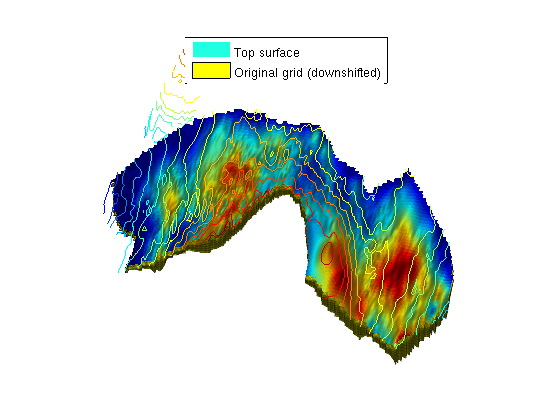
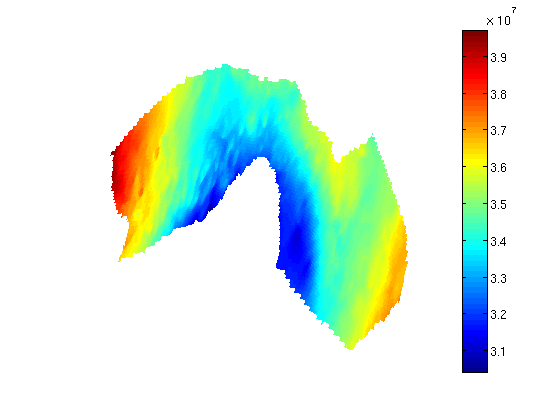
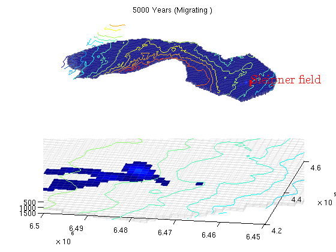

Contents
- Simulate long term migration on the Utsira formation
- Set up fluid properties and hydrostatic pressure
- Set up injection parameters
- Set up a grid corresponding to the Utsira formation
- Plot grid along with top surface
- Set up rock properties and compute transmissibilities
- Set up fluid
- Set up well and boundary conditions
- Set up initial reservoir conditions
- Run the simulation
Simulate long term migration on the Utsira formation
This example demonstrates simulation of long-term migration of CO2 in the Utsira formation using incompressible flow and Dirichlet pressure boundary conditions. CO2 is injected in the cell nearest to the Sleipner field where CO2 injection is ongoing.
mrstModule add gridtools mex
Set up fluid properties and hydrostatic pressure
We define approximate hydrostatic pressure for a set of z values to use as initial values:
$P = P_0 + rho_{water}\cdot \delta h g_z $
At the same time, we define the physical properties of CO2 and water at our reference pressure.
We also define a coarsening of the full Utsira grid. The full grid contains a fairly large number of cells, so we coarse by a factor 3. This can be changed to a higher or lower number depending on the available processing power and the patience of the user.
muw = 0.30860; rhow = 975.86; sw = 0.1; muc = 0.056641; rhoc = 686.54; srco2 = 0.2; kwm = [0.2142 0.85]; mu = [muc muw ] .* centi*poise; rho = [rhoc rhow] .* kilogram/meter^3; % Define reservoar top topPos = 300*meter; topPressure = 300*barsa; % Turn on gravity gravity on; grav = gravity(); % Pressure function pressure = @(z) topPressure + rho(2)*(z - topPos)*grav(3); % Default viewing angle v = [-80, 80]; % Coarsening factor nc = 3;
Set up injection parameters
We inject a yearly amount of 1 Mt/year (which is approximately the same as the current injection at Sleipner) for a period of 100 years, followed by 4900 years of migration. During injection the timesteps are smaller than during migration.
T_tot = 5000*year; T_inj = 100*year; N = 20; dT_inj = T_inj / N; % short time steps during injection dT_long = dT_inj*5; % longer steps during migration % ~ 1Mt annual injection rate = 1e9*kilogram/(year*rhoc*kilogram*meter^3); % Approximate position of the Sleipner field sleipnerPos = [438514, 6472100];
Set up a grid corresponding to the Utsira formation
The Sleipner field has a history of CO2 injection. It is embedded in the Utsira formation. We will demonstrate how the larger formation grids can be used to simulate long term migration.
[grids, info, petrodata] = getAtlasGrid('Utsirafm', 'nz', 5, 'coarsening', nc); % Store heightmap data for contour plots info = info(cellfun(@(x) strcmpi(x.variant, 'top'), info)); info = info{1}; G = processGRDECL(grids{1}); % Depending on the coarsening factor, occasionally very small subsets of % cells may become disconnected. We guard against this by taking only the % first grid returned by processGRDECL, which is guaranteed by % processGRDECL to be the one with the most cells. G = G(1); try % Try accelerated geometry calculations. G = mcomputeGeometry(G); catch ex %#ok % Fall back to pure MATLAB code. G = computeGeometry(G); end [Gt, G] = topSurfaceGrid(G);
Plot grid along with top surface
We downshift the full grid to plot it alongside with the top surface. We also add a simple light to show the surface variation in height, which highlights regions where structural trapping is possible.
To show the relation to the original dataset, we plot contour lines on the original height data. Note that as the final grid is the intersection between the provided height and thickness datasets, some contour lines do not correspond to any part of the grid.
figure; Gplot = G; Gplot.nodes.coords(:,3) = Gplot.nodes.coords(:,3) + 100; plotCellData(Gt, Gt.cells.H) plotGrid(Gplot, 'edgea', .1) light lighting phong view(v); legend({'Top surface', 'Original grid (downshifted)'}, 'Location', 'North') contourAtlas(info, 15, 1) axis tight off
Set up rock properties and compute transmissibilities
We use the averaged values for porosity and permeability as given in the Atlas tables. Since cellwise data is not present, we assume to averaged values to be valid everywhere.
pd = petrodata{1};
rock.poro = repmat(pd.avgporo, G.cells.num, 1);
rock.perm = repmat(pd.avgperm, G.cells.num, 1);
rock2D = averageRock(rock, Gt);
T = computeTrans(Gt, rock2D);
T = T.*Gt.cells.H(gridCellNo(Gt));
Set up fluid
fluid = initSimpleVEFluid_s('mu' , mu , 'rho', rho, ... 'height' , Gt.cells.H,... 'sr', [srco2, sw],'kwm',kwm);
Set up well and boundary conditions
This example is using an incompressible model for both rock and fluid. If we assume no-flow on the boundary, this will result in zero flow from a single injection well. However, this can be compensated if we use the physical understanding of the problem to set appropriate boundary conditions: The Utsira formation is enormous compared to the volume of the injected CO2. Thus, it is impossible that the injection will change the composition of the formation significantly. We therefore assume that the boundary conditions can be set equal to hydrostatic pressure to drive flow.
% Find the cell nearest to the Sleipner field si = findEnclosingCell(Gt, sleipnerPos); % Add an injector well for the CO2 W = addWell([], G, rock, si,... 'Type', 'rate', 'Val', rate, 'comp_i', [1,0], 'name', 'Sleipner field'); % Add pressure boundary bnd = boundaryFaces(Gt); bc = addBC([], bnd, 'pressure', pressure(Gt.faces.z(bnd)), 'sat', [0 1]); % Convert to 2D wells W2D = convertwellsVE_s(W, G, Gt, rock2D,'ip_tpf');
Set up initial reservoir conditions
The initial pressure is set to hydrostatic pressure. Setup and plot.
sol = initResSolVE_s(Gt, pressure(Gt.cells.z), 0); sol.wellSol = initWellSol(W2D, 0); clf; plotCellData(Gt, sol.pressure); view(v); axis tight off; colorbar
Run the simulation
Solve for all timesteps, and plot the results at each timestep.
t = 0; dT = dT_inj; tt = ' (Injecting)'; while t < T_tot; if t >= T_inj W2D = []; dT = dT_long; tt = ' (Migrating )'; end sol = incompTPFA(sol, Gt, T, fluid, 'wells', W2D, 'bc', bc); sol = implicitTransport(sol, Gt, dT, rock2D, fluid, 'wells', W2D, 'bc', bc, 'Verbose', true); t = t + dT; % Plotting [s h] = normalizeValuesVE(Gt, sol, fluid); % Plot the whole formation subplot(2,1,1) cla plotCellData(G, s, 'edgec', 'k', 'edgea', .1, 'edgec', [.6 .6 .6]); plotWell(G, W); caxis([0 .9]); contourAtlas(info) title([formatTimeRange(t) tt]) axis tight off view(v); % Plot the area around the Sleipner formation subplot(2,1,2) cla plotCellData(G, s, s > 1e-3); contourAtlas(info,25) plotGrid(G, 'facec', 'none', 'edgec', [.6 .6 .6], 'edgea', .1) axis([4.2e5 4.6e5 6.45e6 6.5e6]), caxis([0 .9]); view(v); drawnow end
implicitTransport: ---------------------------------------------------------------------- Time interval (s) iter relax residual rate ---------------------------------------------------------------------- [0.0e+00, 1.6e+08]: 1 1.00 3.03088e-03 NaN [0.0e+00, 1.6e+08]: 2 1.00 2.16022e-05 1.60 [0.0e+00, 1.6e+08]: 3 1.00 1.03382e-09 2.01 Iterations : 3 Wasted iterations : 0 Sub steps : 1 Failed steps : 0 Final residual : 1.03e-09 Convergence rate : 1.9 ---------------------------------------------------------------------- implicitTransport: ---------------------------------------------------------------------- Time interval (s) iter relax residual rate ---------------------------------------------------------------------- [0.0e+00, 1.6e+08]: 1 1.00 1.88458e-03 NaN [0.0e+00, 1.6e+08]: 2 1.00 4.34143e-06 1.70 [0.0e+00, 1.6e+08]: 3 1.00 2.86663e-11 1.96 Iterations : 3 Wasted iterations : 0 Sub steps : 1 Failed steps : 0 Final residual : 2.87e-11 Convergence rate : 1.9 ---------------------------------------------------------------------- implicitTransport: ---------------------------------------------------------------------- Time interval (s) iter relax residual rate ---------------------------------------------------------------------- [0.0e+00, 1.6e+08]: 1 1.00 1.51352e-03 NaN [0.0e+00, 1.6e+08]: 2 1.00 1.69641e-06 1.79 [0.0e+00, 1.6e+08]: 3 1.00 1.10460e-11 1.76 Iterations : 3 Wasted iterations : 0 Sub steps : 1 Failed steps : 0 Final residual : 1.10e-11 Convergence rate : 1.8 ---------------------------------------------------------------------- implicitTransport: ---------------------------------------------------------------------- Time interval (s) iter relax residual rate ---------------------------------------------------------------------- [0.0e+00, 1.6e+08]: 1 1.00 1.17814e-03 NaN [0.0e+00, 1.6e+08]: 2 1.00 1.33613e-06 1.68 [0.0e+00, 1.6e+08]: 3 1.00 5.46689e-11 1.49 Iterations : 3 Wasted iterations : 0 Sub steps : 1 Failed steps : 0 Final residual : 5.47e-11 Convergence rate : 1.6 ---------------------------------------------------------------------- implicitTransport: ---------------------------------------------------------------------- Time interval (s) iter relax residual rate ---------------------------------------------------------------------- [0.0e+00, 1.6e+08]: 1 1.00 1.17814e-03 NaN [0.0e+00, 1.6e+08]: 2 1.00 1.30363e-06 1.69 [0.0e+00, 1.6e+08]: 3 1.00 1.21831e-10 1.36 Iterations : 3 Wasted iterations : 0 Sub steps : 1 Failed steps : 0 Final residual : 1.22e-10 Convergence rate : 1.5 ---------------------------------------------------------------------- implicitTransport: ---------------------------------------------------------------------- Time interval (s) iter relax residual rate ---------------------------------------------------------------------- [0.0e+00, 1.6e+08]: 1 1.00 1.17814e-03 NaN [0.0e+00, 1.6e+08]: 2 1.00 1.30363e-06 1.69 [0.0e+00, 1.6e+08]: 3 1.00 6.51200e-11 1.46 Iterations : 3 Wasted iterations : 0 Sub steps : 1 Failed steps : 0 Final residual : 6.51e-11 Convergence rate : 1.5 ---------------------------------------------------------------------- implicitTransport: ---------------------------------------------------------------------- Time interval (s) iter relax residual rate ---------------------------------------------------------------------- [0.0e+00, 1.6e+08]: 1 1.00 1.17814e-03 NaN [0.0e+00, 1.6e+08]: 2 1.00 9.09292e-06 1.20 [0.0e+00, 1.6e+08]: 3 1.00 1.64043e-10 2.25 Iterations : 3 Wasted iterations : 0 Sub steps : 1 Failed steps : 0 Final residual : 1.64e-10 Convergence rate : 1.8 ---------------------------------------------------------------------- implicitTransport: ---------------------------------------------------------------------- Time interval (s) iter relax residual rate ---------------------------------------------------------------------- [0.0e+00, 1.6e+08]: 1 1.00 1.17814e-03 NaN [0.0e+00, 1.6e+08]: 2 1.00 1.30363e-06 1.69 [0.0e+00, 1.6e+08]: 3 1.00 5.26183e-12 1.82 Iterations : 3 Wasted iterations : 0 Sub steps : 1 Failed steps : 0 Final residual : 5.26e-12 Convergence rate : 1.8 ---------------------------------------------------------------------- implicitTransport: ---------------------------------------------------------------------- Time interval (s) iter relax residual rate ---------------------------------------------------------------------- [0.0e+00, 1.6e+08]: 1 1.00 1.17814e-03 NaN [0.0e+00, 1.6e+08]: 2 1.00 2.96562e-06 1.48 [0.0e+00, 1.6e+08]: 3 1.00 1.60813e-11 2.03 Iterations : 3 Wasted iterations : 0 Sub steps : 1 Failed steps : 0 Final residual : 1.61e-11 Convergence rate : 1.8 ---------------------------------------------------------------------- implicitTransport: ---------------------------------------------------------------------- Time interval (s) iter relax residual rate ---------------------------------------------------------------------- [0.0e+00, 1.6e+08]: 1 1.00 1.17814e-03 NaN [0.0e+00, 1.6e+08]: 2 1.00 1.30363e-06 1.69 [0.0e+00, 1.6e+08]: 3 1.00 5.26183e-12 1.82 Iterations : 3 Wasted iterations : 0 Sub steps : 1 Failed steps : 0 Final residual : 5.26e-12 Convergence rate : 1.8 ---------------------------------------------------------------------- implicitTransport: ---------------------------------------------------------------------- Time interval (s) iter relax residual rate ---------------------------------------------------------------------- [0.0e+00, 1.6e+08]: 1 1.00 1.17814e-03 NaN [0.0e+00, 1.6e+08]: 2 1.00 1.30363e-06 1.69 [0.0e+00, 1.6e+08]: 3 1.00 5.26183e-12 1.82 Iterations : 3 Wasted iterations : 0 Sub steps : 1 Failed steps : 0 Final residual : 5.26e-12 Convergence rate : 1.8 ---------------------------------------------------------------------- implicitTransport: ---------------------------------------------------------------------- Time interval (s) iter relax residual rate ---------------------------------------------------------------------- [0.0e+00, 1.6e+08]: 1 1.00 1.17814e-03 NaN [0.0e+00, 1.6e+08]: 2 1.00 1.30363e-06 1.69 [0.0e+00, 1.6e+08]: 3 1.00 5.26183e-12 1.82 Iterations : 3 Wasted iterations : 0 Sub steps : 1 Failed steps : 0 Final residual : 5.26e-12 Convergence rate : 1.8 ---------------------------------------------------------------------- implicitTransport: ---------------------------------------------------------------------- Time interval (s) iter relax residual rate ---------------------------------------------------------------------- [0.0e+00, 1.6e+08]: 1 1.00 1.17814e-03 NaN [0.0e+00, 1.6e+08]: 2 1.00 1.30363e-06 1.69 [0.0e+00, 1.6e+08]: 3 1.00 5.26183e-12 1.82 Iterations : 3 Wasted iterations : 0 Sub steps : 1 Failed steps : 0 Final residual : 5.26e-12 Convergence rate : 1.8 ---------------------------------------------------------------------- implicitTransport: ---------------------------------------------------------------------- Time interval (s) iter relax residual rate ---------------------------------------------------------------------- [0.0e+00, 1.6e+08]: 1 1.00 1.17814e-03 NaN [0.0e+00, 1.6e+08]: 2 1.00 1.30363e-06 1.69 [0.0e+00, 1.6e+08]: 3 1.00 7.98614e-12 1.76 Iterations : 3 Wasted iterations : 0 Sub steps : 1 Failed steps : 0 Final residual : 7.99e-12 Convergence rate : 1.7 ---------------------------------------------------------------------- implicitTransport: ---------------------------------------------------------------------- Time interval (s) iter relax residual rate ---------------------------------------------------------------------- [0.0e+00, 1.6e+08]: 1 1.00 1.17814e-03 NaN [0.0e+00, 1.6e+08]: 2 1.00 1.30363e-06 1.69 [0.0e+00, 1.6e+08]: 3 1.00 1.44825e-11 1.68 Iterations : 3 Wasted iterations : 0 Sub steps : 1 Failed steps : 0 Final residual : 1.45e-11 Convergence rate : 1.7 ---------------------------------------------------------------------- implicitTransport: ---------------------------------------------------------------------- Time interval (s) iter relax residual rate ---------------------------------------------------------------------- [0.0e+00, 1.6e+08]: 1 1.00 1.17814e-03 NaN [0.0e+00, 1.6e+08]: 2 1.00 1.65555e-06 1.63 [0.0e+00, 1.6e+08]: 3 1.00 2.53831e-11 1.69 Iterations : 3 Wasted iterations : 0 Sub steps : 1 Failed steps : 0 Final residual : 2.54e-11 Convergence rate : 1.7 ---------------------------------------------------------------------- implicitTransport: ---------------------------------------------------------------------- Time interval (s) iter relax residual rate ---------------------------------------------------------------------- [0.0e+00, 1.6e+08]: 1 1.00 1.17814e-03 NaN [0.0e+00, 1.6e+08]: 2 1.00 1.38948e-06 1.67 [0.0e+00, 1.6e+08]: 3 1.00 4.31533e-11 1.54 Iterations : 3 Wasted iterations : 0 Sub steps : 1 Failed steps : 0 Final residual : 4.32e-11 Convergence rate : 1.6 ---------------------------------------------------------------------- implicitTransport: ---------------------------------------------------------------------- Time interval (s) iter relax residual rate ---------------------------------------------------------------------- [0.0e+00, 1.6e+08]: 1 1.00 1.17814e-03 NaN [0.0e+00, 1.6e+08]: 2 1.00 1.30363e-06 1.69 [0.0e+00, 1.6e+08]: 3 1.00 6.30959e-11 1.46 Iterations : 3 Wasted iterations : 0 Sub steps : 1 Failed steps : 0 Final residual : 6.31e-11 Convergence rate : 1.5 ---------------------------------------------------------------------- implicitTransport: ---------------------------------------------------------------------- Time interval (s) iter relax residual rate ---------------------------------------------------------------------- [0.0e+00, 1.6e+08]: 1 1.00 1.17814e-03 NaN [0.0e+00, 1.6e+08]: 2 1.00 1.30363e-06 1.69 [0.0e+00, 1.6e+08]: 3 1.00 9.32179e-11 1.40 Iterations : 3 Wasted iterations : 0 Sub steps : 1 Failed steps : 0 Final residual : 9.32e-11 Convergence rate : 1.5 ---------------------------------------------------------------------- implicitTransport: ---------------------------------------------------------------------- Time interval (s) iter relax residual rate ---------------------------------------------------------------------- [0.0e+00, 1.6e+08]: 1 1.00 1.17814e-03 NaN [0.0e+00, 1.6e+08]: 2 1.00 1.30363e-06 1.69 [0.0e+00, 1.6e+08]: 3 1.00 6.71938e-11 1.45 Iterations : 3 Wasted iterations : 0 Sub steps : 1 Failed steps : 0 Final residual : 6.72e-11 Convergence rate : 1.5 ---------------------------------------------------------------------- implicitTransport: ---------------------------------------------------------------------- Time interval (s) iter relax residual rate ---------------------------------------------------------------------- [0.0e+00, 7.9e+08]: 1 1.00 5.60520e-03 NaN [0.0e+00, 7.9e+08]: 2 1.00 8.28934e-04 0.48 [0.0e+00, 7.9e+08]: 3 1.00 1.45888e-04 0.91 [0.0e+00, 7.9e+08]: 4 1.00 2.70935e-05 0.97 [0.0e+00, 7.9e+08]: 5 1.00 5.24790e-06 0.98 [0.0e+00, 7.9e+08]: 6 1.00 1.04253e-06 0.98 [0.0e+00, 7.9e+08]: 7 1.00 2.10794e-07 0.99 Iterations : 7 Wasted iterations : 0 Sub steps : 1 Failed steps : 0 Final residual : 2.11e-07 Convergence rate : 0.8 ---------------------------------------------------------------------- implicitTransport: ---------------------------------------------------------------------- Time interval (s) iter relax residual rate ---------------------------------------------------------------------- [0.0e+00, 7.9e+08]: 1 1.00 1.16424e-02 NaN [0.0e+00, 7.9e+08]: 2 1.00 2.62315e-03 0.58 [0.0e+00, 7.9e+08]: 3 1.00 4.68485e-04 1.16 [0.0e+00, 7.9e+08]: 4 1.00 8.92411e-05 0.96 [0.0e+00, 7.9e+08]: 5 1.00 1.70303e-05 1.00 [0.0e+00, 7.9e+08]: 6 1.00 3.28704e-06 0.99 [0.0e+00, 7.9e+08]: 7 1.00 6.39873e-07 0.99 Iterations : 7 Wasted iterations : 0 Sub steps : 1 Failed steps : 0 Final residual : 6.40e-07 Convergence rate : 0.9 ---------------------------------------------------------------------- implicitTransport: ---------------------------------------------------------------------- Time interval (s) iter relax residual rate ---------------------------------------------------------------------- [0.0e+00, 7.9e+08]: 1 1.00 8.73154e-03 NaN [0.0e+00, 7.9e+08]: 2 1.00 1.61262e-03 0.62 [0.0e+00, 7.9e+08]: 3 1.00 2.52386e-04 1.10 [0.0e+00, 7.9e+08]: 4 1.00 4.16477e-05 0.97 [0.0e+00, 7.9e+08]: 5 1.00 6.94291e-06 0.99 [0.0e+00, 7.9e+08]: 6 1.00 1.17344e-06 0.99 [0.0e+00, 7.9e+08]: 7 1.00 2.00710e-07 0.99 Iterations : 7 Wasted iterations : 0 Sub steps : 1 Failed steps : 0 Final residual : 2.01e-07 Convergence rate : 0.9 ---------------------------------------------------------------------- implicitTransport: ---------------------------------------------------------------------- Time interval (s) iter relax residual rate ---------------------------------------------------------------------- [0.0e+00, 7.9e+08]: 1 1.00 5.65372e-03 NaN [0.0e+00, 7.9e+08]: 2 1.00 8.59559e-04 0.60 [0.0e+00, 7.9e+08]: 3 1.00 1.41520e-04 0.96 [0.0e+00, 7.9e+08]: 4 1.00 2.53703e-05 0.95 [0.0e+00, 7.9e+08]: 5 1.00 4.60535e-06 0.99 [0.0e+00, 7.9e+08]: 6 1.00 8.45248e-07 0.99 Iterations : 6 Wasted iterations : 0 Sub steps : 1 Failed steps : 0 Final residual : 8.45e-07 Convergence rate : 0.9 ---------------------------------------------------------------------- implicitTransport: ---------------------------------------------------------------------- Time interval (s) iter relax residual rate ---------------------------------------------------------------------- [0.0e+00, 7.9e+08]: 1 1.00 4.56786e-03 NaN [0.0e+00, 7.9e+08]: 2 1.00 6.78367e-04 0.56 [0.0e+00, 7.9e+08]: 3 1.00 1.24064e-04 0.89 [0.0e+00, 7.9e+08]: 4 1.00 2.30156e-05 0.99 [0.0e+00, 7.9e+08]: 5 1.00 4.32717e-06 0.99 [0.0e+00, 7.9e+08]: 6 1.00 8.21018e-07 0.99 Iterations : 6 Wasted iterations : 0 Sub steps : 1 Failed steps : 0 Final residual : 8.21e-07 Convergence rate : 0.9 ---------------------------------------------------------------------- implicitTransport: ---------------------------------------------------------------------- Time interval (s) iter relax residual rate ---------------------------------------------------------------------- [0.0e+00, 7.9e+08]: 1 1.00 4.56786e-03 NaN [0.0e+00, 7.9e+08]: 2 1.00 6.68391e-04 0.57 [0.0e+00, 7.9e+08]: 3 1.00 1.12512e-04 0.93 [0.0e+00, 7.9e+08]: 4 1.00 1.98959e-05 0.97 [0.0e+00, 7.9e+08]: 5 1.00 3.57411e-06 0.99 [0.0e+00, 7.9e+08]: 6 1.00 6.49805e-07 0.99 Iterations : 6 Wasted iterations : 0 Sub steps : 1 Failed steps : 0 Final residual : 6.50e-07 Convergence rate : 0.9 ---------------------------------------------------------------------- implicitTransport: ---------------------------------------------------------------------- Time interval (s) iter relax residual rate ---------------------------------------------------------------------- [0.0e+00, 7.9e+08]: 1 1.00 4.56786e-03 NaN [0.0e+00, 7.9e+08]: 2 1.00 7.43565e-04 0.54 [0.0e+00, 7.9e+08]: 3 1.00 1.21822e-04 1.00 [0.0e+00, 7.9e+08]: 4 1.00 2.10191e-05 0.97 [0.0e+00, 7.9e+08]: 5 1.00 3.68528e-06 0.99 [0.0e+00, 7.9e+08]: 6 1.00 6.53582e-07 0.99 Iterations : 6 Wasted iterations : 0 Sub steps : 1 Failed steps : 0 Final residual : 6.54e-07 Convergence rate : 0.9 ---------------------------------------------------------------------- implicitTransport: ---------------------------------------------------------------------- Time interval (s) iter relax residual rate ---------------------------------------------------------------------- [0.0e+00, 7.9e+08]: 1 1.00 4.56786e-03 NaN [0.0e+00, 7.9e+08]: 2 1.00 7.58054e-04 0.53 [0.0e+00, 7.9e+08]: 3 1.00 1.22364e-04 1.02 [0.0e+00, 7.9e+08]: 4 1.00 2.06181e-05 0.98 [0.0e+00, 7.9e+08]: 5 1.00 3.52341e-06 0.99 [0.0e+00, 7.9e+08]: 6 1.00 6.09134e-07 0.99 Iterations : 6 Wasted iterations : 0 Sub steps : 1 Failed steps : 0 Final residual : 6.09e-07 Convergence rate : 0.9 ---------------------------------------------------------------------- implicitTransport: ---------------------------------------------------------------------- Time interval (s) iter relax residual rate ---------------------------------------------------------------------- [0.0e+00, 7.9e+08]: 1 1.00 4.56786e-03 NaN [0.0e+00, 7.9e+08]: 2 1.00 7.57659e-04 0.53 [0.0e+00, 7.9e+08]: 3 1.00 1.20406e-04 1.02 [0.0e+00, 7.9e+08]: 4 1.00 1.99248e-05 0.98 [0.0e+00, 7.9e+08]: 5 1.00 3.33965e-06 0.99 [0.0e+00, 7.9e+08]: 6 1.00 5.65789e-07 0.99 Iterations : 6 Wasted iterations : 0 Sub steps : 1 Failed steps : 0 Final residual : 5.66e-07 Convergence rate : 0.9 ---------------------------------------------------------------------- implicitTransport: ---------------------------------------------------------------------- Time interval (s) iter relax residual rate ---------------------------------------------------------------------- [0.0e+00, 7.9e+08]: 1 1.00 4.56786e-03 NaN [0.0e+00, 7.9e+08]: 2 1.00 7.48589e-04 0.54 [0.0e+00, 7.9e+08]: 3 1.00 1.17191e-04 1.03 [0.0e+00, 7.9e+08]: 4 1.00 1.90573e-05 0.98 [0.0e+00, 7.9e+08]: 5 1.00 3.13695e-06 0.99 [0.0e+00, 7.9e+08]: 6 1.00 5.21712e-07 0.99 Iterations : 6 Wasted iterations : 0 Sub steps : 1 Failed steps : 0 Final residual : 5.22e-07 Convergence rate : 0.9 ---------------------------------------------------------------------- implicitTransport: ---------------------------------------------------------------------- Time interval (s) iter relax residual rate ---------------------------------------------------------------------- [0.0e+00, 7.9e+08]: 1 1.00 4.56786e-03 NaN [0.0e+00, 7.9e+08]: 2 1.00 7.32220e-04 0.54 [0.0e+00, 7.9e+08]: 3 1.00 1.11379e-04 1.03 [0.0e+00, 7.9e+08]: 4 1.00 1.75923e-05 0.98 [0.0e+00, 7.9e+08]: 5 1.00 2.81897e-06 0.99 [0.0e+00, 7.9e+08]: 6 1.00 4.57068e-07 0.99 Iterations : 6 Wasted iterations : 0 Sub steps : 1 Failed steps : 0 Final residual : 4.57e-07 Convergence rate : 0.9 ---------------------------------------------------------------------- implicitTransport: ---------------------------------------------------------------------- Time interval (s) iter relax residual rate ---------------------------------------------------------------------- [0.0e+00, 7.9e+08]: 1 1.00 4.56786e-03 NaN [0.0e+00, 7.9e+08]: 2 1.00 7.13139e-04 0.55 [0.0e+00, 7.9e+08]: 3 1.00 1.07503e-04 1.02 [0.0e+00, 7.9e+08]: 4 1.00 1.68293e-05 0.98 [0.0e+00, 7.9e+08]: 5 1.00 2.66885e-06 0.99 [0.0e+00, 7.9e+08]: 6 1.00 4.27170e-07 0.99 Iterations : 6 Wasted iterations : 0 Sub steps : 1 Failed steps : 0 Final residual : 4.27e-07 Convergence rate : 0.9 ---------------------------------------------------------------------- implicitTransport: ---------------------------------------------------------------------- Time interval (s) iter relax residual rate ---------------------------------------------------------------------- [0.0e+00, 7.9e+08]: 1 1.00 4.56786e-03 NaN [0.0e+00, 7.9e+08]: 2 1.00 6.93785e-04 0.56 [0.0e+00, 7.9e+08]: 3 1.00 1.03521e-04 1.01 [0.0e+00, 7.9e+08]: 4 1.00 1.59952e-05 0.98 [0.0e+00, 7.9e+08]: 5 1.00 2.50190e-06 0.99 [0.0e+00, 7.9e+08]: 6 1.00 3.94784e-07 1.00 Iterations : 6 Wasted iterations : 0 Sub steps : 1 Failed steps : 0 Final residual : 3.95e-07 Convergence rate : 0.9 ---------------------------------------------------------------------- implicitTransport: ---------------------------------------------------------------------- Time interval (s) iter relax residual rate ---------------------------------------------------------------------- [0.0e+00, 7.9e+08]: 1 1.00 4.56786e-03 NaN [0.0e+00, 7.9e+08]: 2 1.00 6.11085e-04 0.60 [0.0e+00, 7.9e+08]: 3 1.00 9.05411e-05 0.95 [0.0e+00, 7.9e+08]: 4 1.00 1.38249e-05 0.98 [0.0e+00, 7.9e+08]: 5 1.00 2.13640e-06 0.99 [0.0e+00, 7.9e+08]: 6 1.00 3.32910e-07 1.00 Iterations : 6 Wasted iterations : 0 Sub steps : 1 Failed steps : 0 Final residual : 3.33e-07 Convergence rate : 0.9 ---------------------------------------------------------------------- implicitTransport: ---------------------------------------------------------------------- Time interval (s) iter relax residual rate ---------------------------------------------------------------------- [0.0e+00, 7.9e+08]: 1 1.00 4.56786e-03 NaN [0.0e+00, 7.9e+08]: 2 1.00 5.90186e-04 0.61 [0.0e+00, 7.9e+08]: 3 1.00 8.61427e-05 0.94 [0.0e+00, 7.9e+08]: 4 1.00 1.29542e-05 0.98 [0.0e+00, 7.9e+08]: 5 1.00 1.97251e-06 0.99 [0.0e+00, 7.9e+08]: 6 1.00 3.03056e-07 1.00 Iterations : 6 Wasted iterations : 0 Sub steps : 1 Failed steps : 0 Final residual : 3.03e-07 Convergence rate : 0.9 ---------------------------------------------------------------------- implicitTransport: ---------------------------------------------------------------------- Time interval (s) iter relax residual rate ---------------------------------------------------------------------- [0.0e+00, 7.9e+08]: 1 1.00 4.56786e-03 NaN [0.0e+00, 7.9e+08]: 2 1.00 5.70109e-04 0.62 [0.0e+00, 7.9e+08]: 3 1.00 8.21476e-05 0.93 [0.0e+00, 7.9e+08]: 4 1.00 1.23753e-05 0.98 [0.0e+00, 7.9e+08]: 5 1.00 1.88527e-06 0.99 [0.0e+00, 7.9e+08]: 6 1.00 2.89809e-07 1.00 Iterations : 6 Wasted iterations : 0 Sub steps : 1 Failed steps : 0 Final residual : 2.90e-07 Convergence rate : 0.9 ---------------------------------------------------------------------- implicitTransport: ---------------------------------------------------------------------- Time interval (s) iter relax residual rate ---------------------------------------------------------------------- [0.0e+00, 7.9e+08]: 1 1.00 4.56786e-03 NaN [0.0e+00, 7.9e+08]: 2 1.00 5.28872e-04 0.64 [0.0e+00, 7.9e+08]: 3 1.00 7.49824e-05 0.91 [0.0e+00, 7.9e+08]: 4 1.00 1.09516e-05 0.98 [0.0e+00, 7.9e+08]: 5 1.00 1.62269e-06 0.99 [0.0e+00, 7.9e+08]: 6 1.00 2.43207e-07 0.99 Iterations : 6 Wasted iterations : 0 Sub steps : 1 Failed steps : 0 Final residual : 2.43e-07 Convergence rate : 0.9 ---------------------------------------------------------------------- implicitTransport: ---------------------------------------------------------------------- Time interval (s) iter relax residual rate ---------------------------------------------------------------------- [0.0e+00, 7.9e+08]: 1 1.00 4.56786e-03 NaN [0.0e+00, 7.9e+08]: 2 1.00 4.93469e-04 0.66 [0.0e+00, 7.9e+08]: 3 1.00 6.87691e-05 0.89 [0.0e+00, 7.9e+08]: 4 1.00 9.84769e-06 0.99 [0.0e+00, 7.9e+08]: 5 1.00 1.43700e-06 0.99 [0.0e+00, 7.9e+08]: 6 1.00 2.12142e-07 0.99 Iterations : 6 Wasted iterations : 0 Sub steps : 1 Failed steps : 0 Final residual : 2.12e-07 Convergence rate : 0.9 ---------------------------------------------------------------------- implicitTransport: ---------------------------------------------------------------------- Time interval (s) iter relax residual rate ---------------------------------------------------------------------- [0.0e+00, 7.9e+08]: 1 1.00 4.56786e-03 NaN [0.0e+00, 7.9e+08]: 2 1.00 5.05911e-04 0.65 [0.0e+00, 7.9e+08]: 3 1.00 6.73829e-05 0.92 [0.0e+00, 7.9e+08]: 4 1.00 8.87613e-06 1.01 [0.0e+00, 7.9e+08]: 5 1.00 1.27579e-06 0.96 [0.0e+00, 7.9e+08]: 6 1.00 1.85746e-07 0.99 Iterations : 6 Wasted iterations : 0 Sub steps : 1 Failed steps : 0 Final residual : 1.86e-07 Convergence rate : 0.9 ---------------------------------------------------------------------- implicitTransport: ---------------------------------------------------------------------- Time interval (s) iter relax residual rate ---------------------------------------------------------------------- [0.0e+00, 7.9e+08]: 1 1.00 4.56786e-03 NaN [0.0e+00, 7.9e+08]: 2 1.00 5.17618e-04 0.64 [0.0e+00, 7.9e+08]: 3 1.00 6.61534e-05 0.94 [0.0e+00, 7.9e+08]: 4 1.00 8.34470e-06 1.01 [0.0e+00, 7.9e+08]: 5 1.00 1.13705e-06 0.96 [0.0e+00, 7.9e+08]: 6 1.00 1.63255e-07 0.97 Iterations : 6 Wasted iterations : 0 Sub steps : 1 Failed steps : 0 Final residual : 1.63e-07 Convergence rate : 0.9 ---------------------------------------------------------------------- implicitTransport: ---------------------------------------------------------------------- Time interval (s) iter relax residual rate ---------------------------------------------------------------------- [0.0e+00, 7.9e+08]: 1 1.00 4.56786e-03 NaN [0.0e+00, 7.9e+08]: 2 1.00 5.28688e-04 0.64 [0.0e+00, 7.9e+08]: 3 1.00 6.50574e-05 0.97 [0.0e+00, 7.9e+08]: 4 1.00 8.06683e-06 1.00 [0.0e+00, 7.9e+08]: 5 1.00 1.01439e-06 0.99 [0.0e+00, 7.9e+08]: 6 1.00 1.43711e-07 0.94 Iterations : 6 Wasted iterations : 0 Sub steps : 1 Failed steps : 0 Final residual : 1.44e-07 Convergence rate : 0.9 ---------------------------------------------------------------------- implicitTransport: ---------------------------------------------------------------------- Time interval (s) iter relax residual rate ---------------------------------------------------------------------- [0.0e+00, 7.9e+08]: 1 1.00 4.56786e-03 NaN [0.0e+00, 7.9e+08]: 2 1.00 5.39199e-04 0.63 [0.0e+00, 7.9e+08]: 3 1.00 6.40800e-05 1.00 [0.0e+00, 7.9e+08]: 4 1.00 7.82166e-06 0.99 [0.0e+00, 7.9e+08]: 5 1.00 9.30941e-07 1.01 Iterations : 5 Wasted iterations : 0 Sub steps : 1 Failed steps : 0 Final residual : 9.31e-07 Convergence rate : 0.9 ---------------------------------------------------------------------- implicitTransport: ---------------------------------------------------------------------- Time interval (s) iter relax residual rate ---------------------------------------------------------------------- [0.0e+00, 7.9e+08]: 1 1.00 4.56786e-03 NaN [0.0e+00, 7.9e+08]: 2 1.00 5.49251e-04 0.63 [0.0e+00, 7.9e+08]: 3 1.00 6.32099e-05 1.02 [0.0e+00, 7.9e+08]: 4 1.00 7.60449e-06 0.98 [0.0e+00, 7.9e+08]: 5 1.00 8.91108e-07 1.01 Iterations : 5 Wasted iterations : 0 Sub steps : 1 Failed steps : 0 Final residual : 8.91e-07 Convergence rate : 0.9 ---------------------------------------------------------------------- implicitTransport: ---------------------------------------------------------------------- Time interval (s) iter relax residual rate ---------------------------------------------------------------------- [0.0e+00, 7.9e+08]: 1 1.00 4.56786e-03 NaN [0.0e+00, 7.9e+08]: 2 1.00 5.59089e-04 0.62 [0.0e+00, 7.9e+08]: 3 1.00 6.24605e-05 1.04 [0.0e+00, 7.9e+08]: 4 1.00 7.41066e-06 0.97 [0.0e+00, 7.9e+08]: 5 1.00 8.55630e-07 1.01 Iterations : 5 Wasted iterations : 0 Sub steps : 1 Failed steps : 0 Final residual : 8.56e-07 Convergence rate : 0.9 ---------------------------------------------------------------------- implicitTransport: ---------------------------------------------------------------------- Time interval (s) iter relax residual rate ---------------------------------------------------------------------- [0.0e+00, 7.9e+08]: 1 1.00 4.56786e-03 NaN [0.0e+00, 7.9e+08]: 2 1.00 5.68322e-04 0.62 [0.0e+00, 7.9e+08]: 3 1.00 6.17744e-05 1.06 [0.0e+00, 7.9e+08]: 4 1.00 7.24139e-06 0.97 [0.0e+00, 7.9e+08]: 5 1.00 8.25156e-07 1.01 Iterations : 5 Wasted iterations : 0 Sub steps : 1 Failed steps : 0 Final residual : 8.25e-07 Convergence rate : 0.9 ---------------------------------------------------------------------- implicitTransport: ---------------------------------------------------------------------- Time interval (s) iter relax residual rate ---------------------------------------------------------------------- [0.0e+00, 7.9e+08]: 1 1.00 4.56786e-03 NaN [0.0e+00, 7.9e+08]: 2 1.00 5.77206e-04 0.61 [0.0e+00, 7.9e+08]: 3 1.00 6.11690e-05 1.09 [0.0e+00, 7.9e+08]: 4 1.00 7.09185e-06 0.96 [0.0e+00, 7.9e+08]: 5 1.00 7.98464e-07 1.01 Iterations : 5 Wasted iterations : 0 Sub steps : 1 Failed steps : 0 Final residual : 7.98e-07 Convergence rate : 0.9 ---------------------------------------------------------------------- implicitTransport: ---------------------------------------------------------------------- Time interval (s) iter relax residual rate ---------------------------------------------------------------------- [0.0e+00, 7.9e+08]: 1 1.00 4.56786e-03 NaN [0.0e+00, 7.9e+08]: 2 1.00 5.85772e-04 0.61 [0.0e+00, 7.9e+08]: 3 1.00 6.06369e-05 1.10 [0.0e+00, 7.9e+08]: 4 1.00 6.95983e-06 0.95 [0.0e+00, 7.9e+08]: 5 1.00 7.75079e-07 1.01 Iterations : 5 Wasted iterations : 0 Sub steps : 1 Failed steps : 0 Final residual : 7.75e-07 Convergence rate : 0.9 ---------------------------------------------------------------------- implicitTransport: ---------------------------------------------------------------------- Time interval (s) iter relax residual rate ---------------------------------------------------------------------- [0.0e+00, 7.9e+08]: 1 1.00 4.56786e-03 NaN [0.0e+00, 7.9e+08]: 2 1.00 5.94044e-04 0.60 [0.0e+00, 7.9e+08]: 3 1.00 6.01724e-05 1.12 [0.0e+00, 7.9e+08]: 4 1.00 6.84357e-06 0.95 [0.0e+00, 7.9e+08]: 5 1.00 7.54623e-07 1.01 Iterations : 5 Wasted iterations : 0 Sub steps : 1 Failed steps : 0 Final residual : 7.55e-07 Convergence rate : 0.9 ---------------------------------------------------------------------- implicitTransport: ---------------------------------------------------------------------- Time interval (s) iter relax residual rate ---------------------------------------------------------------------- [0.0e+00, 7.9e+08]: 1 1.00 4.56786e-03 NaN [0.0e+00, 7.9e+08]: 2 1.00 6.02041e-04 0.60 [0.0e+00, 7.9e+08]: 3 1.00 5.97685e-05 1.14 [0.0e+00, 7.9e+08]: 4 1.00 6.74121e-06 0.94 [0.0e+00, 7.9e+08]: 5 1.00 7.36711e-07 1.01 Iterations : 5 Wasted iterations : 0 Sub steps : 1 Failed steps : 0 Final residual : 7.37e-07 Convergence rate : 0.9 ---------------------------------------------------------------------- implicitTransport: ---------------------------------------------------------------------- Time interval (s) iter relax residual rate ---------------------------------------------------------------------- [0.0e+00, 7.9e+08]: 1 1.00 4.56786e-03 NaN [0.0e+00, 7.9e+08]: 2 1.00 6.09780e-04 0.60 [0.0e+00, 7.9e+08]: 3 1.00 5.94211e-05 1.16 [0.0e+00, 7.9e+08]: 4 1.00 6.65149e-06 0.94 [0.0e+00, 7.9e+08]: 5 1.00 7.21076e-07 1.01 Iterations : 5 Wasted iterations : 0 Sub steps : 1 Failed steps : 0 Final residual : 7.21e-07 Convergence rate : 0.9 ---------------------------------------------------------------------- implicitTransport: ---------------------------------------------------------------------- Time interval (s) iter relax residual rate ---------------------------------------------------------------------- [0.0e+00, 7.9e+08]: 1 1.00 4.56786e-03 NaN [0.0e+00, 7.9e+08]: 2 1.00 6.17274e-04 0.59 [0.0e+00, 7.9e+08]: 3 1.00 5.91257e-05 1.17 [0.0e+00, 7.9e+08]: 4 1.00 6.57318e-06 0.94 [0.0e+00, 7.9e+08]: 5 1.00 7.07463e-07 1.01 Iterations : 5 Wasted iterations : 0 Sub steps : 1 Failed steps : 0 Final residual : 7.07e-07 Convergence rate : 0.9 ---------------------------------------------------------------------- implicitTransport: ---------------------------------------------------------------------- Time interval (s) iter relax residual rate ---------------------------------------------------------------------- [0.0e+00, 7.9e+08]: 1 1.00 4.56786e-03 NaN [0.0e+00, 7.9e+08]: 2 1.00 6.24536e-04 0.59 [0.0e+00, 7.9e+08]: 3 1.00 5.88781e-05 1.19 [0.0e+00, 7.9e+08]: 4 1.00 6.50517e-06 0.93 [0.0e+00, 7.9e+08]: 5 1.00 6.95649e-07 1.01 Iterations : 5 Wasted iterations : 0 Sub steps : 1 Failed steps : 0 Final residual : 6.96e-07 Convergence rate : 0.9 ---------------------------------------------------------------------- implicitTransport: ---------------------------------------------------------------------- Time interval (s) iter relax residual rate ---------------------------------------------------------------------- [0.0e+00, 7.9e+08]: 1 1.00 4.56786e-03 NaN [0.0e+00, 7.9e+08]: 2 1.00 6.31574e-04 0.59 [0.0e+00, 7.9e+08]: 3 1.00 5.86749e-05 1.20 [0.0e+00, 7.9e+08]: 4 1.00 6.44653e-06 0.93 [0.0e+00, 7.9e+08]: 5 1.00 6.85445e-07 1.01 Iterations : 5 Wasted iterations : 0 Sub steps : 1 Failed steps : 0 Final residual : 6.85e-07 Convergence rate : 0.9 ---------------------------------------------------------------------- implicitTransport: ---------------------------------------------------------------------- Time interval (s) iter relax residual rate ---------------------------------------------------------------------- [0.0e+00, 7.9e+08]: 1 1.00 4.58847e-03 NaN [0.0e+00, 7.9e+08]: 2 1.00 6.38396e-04 0.58 [0.0e+00, 7.9e+08]: 3 1.00 5.85127e-05 1.21 [0.0e+00, 7.9e+08]: 4 1.00 6.39637e-06 0.93 [0.0e+00, 7.9e+08]: 5 1.00 6.76678e-07 1.01 Iterations : 5 Wasted iterations : 0 Sub steps : 1 Failed steps : 0 Final residual : 6.77e-07 Convergence rate : 0.9 ---------------------------------------------------------------------- implicitTransport: ---------------------------------------------------------------------- Time interval (s) iter relax residual rate ---------------------------------------------------------------------- [0.0e+00, 7.9e+08]: 1 1.00 4.61672e-03 NaN [0.0e+00, 7.9e+08]: 2 1.00 6.44995e-04 0.58 [0.0e+00, 7.9e+08]: 3 1.00 5.85147e-05 1.22 [0.0e+00, 7.9e+08]: 4 1.00 6.37144e-06 0.92 [0.0e+00, 7.9e+08]: 5 1.00 6.71377e-07 1.01 Iterations : 5 Wasted iterations : 0 Sub steps : 1 Failed steps : 0 Final residual : 6.71e-07 Convergence rate : 0.9 ---------------------------------------------------------------------- implicitTransport: ---------------------------------------------------------------------- Time interval (s) iter relax residual rate ---------------------------------------------------------------------- [0.0e+00, 7.9e+08]: 1 1.00 4.64416e-03 NaN [0.0e+00, 7.9e+08]: 2 1.00 6.51405e-04 0.58 [0.0e+00, 7.9e+08]: 3 1.00 5.84137e-05 1.23 [0.0e+00, 7.9e+08]: 4 1.00 6.33403e-06 0.92 [0.0e+00, 7.9e+08]: 5 1.00 6.64782e-07 1.01 Iterations : 5 Wasted iterations : 0 Sub steps : 1 Failed steps : 0 Final residual : 6.65e-07 Convergence rate : 0.9 ---------------------------------------------------------------------- implicitTransport: ---------------------------------------------------------------------- Time interval (s) iter relax residual rate ---------------------------------------------------------------------- [0.0e+00, 7.9e+08]: 1 1.00 4.67082e-03 NaN [0.0e+00, 7.9e+08]: 2 1.00 6.57616e-04 0.58 [0.0e+00, 7.9e+08]: 3 1.00 5.83459e-05 1.24 [0.0e+00, 7.9e+08]: 4 1.00 6.30326e-06 0.92 [0.0e+00, 7.9e+08]: 5 1.00 6.59245e-07 1.01 Iterations : 5 Wasted iterations : 0 Sub steps : 1 Failed steps : 0 Final residual : 6.59e-07 Convergence rate : 0.9 ---------------------------------------------------------------------- implicitTransport: ---------------------------------------------------------------------- Time interval (s) iter relax residual rate ---------------------------------------------------------------------- [0.0e+00, 7.9e+08]: 1 1.00 4.69669e-03 NaN [0.0e+00, 7.9e+08]: 2 1.00 6.63632e-04 0.58 [0.0e+00, 7.9e+08]: 3 1.00 5.86204e-05 1.24 [0.0e+00, 7.9e+08]: 4 1.00 6.27843e-06 0.92 [0.0e+00, 7.9e+08]: 5 1.00 6.54662e-07 1.01 Iterations : 5 Wasted iterations : 0 Sub steps : 1 Failed steps : 0 Final residual : 6.55e-07 Convergence rate : 0.9 ---------------------------------------------------------------------- implicitTransport: ---------------------------------------------------------------------- Time interval (s) iter relax residual rate ---------------------------------------------------------------------- [0.0e+00, 7.9e+08]: 1 1.00 4.72168e-03 NaN [0.0e+00, 7.9e+08]: 2 1.00 6.69451e-04 0.58 [0.0e+00, 7.9e+08]: 3 1.00 5.93294e-05 1.24 [0.0e+00, 7.9e+08]: 4 1.00 6.25902e-06 0.93 [0.0e+00, 7.9e+08]: 5 1.00 6.50935e-07 1.01 Iterations : 5 Wasted iterations : 0 Sub steps : 1 Failed steps : 0 Final residual : 6.51e-07 Convergence rate : 0.9 ---------------------------------------------------------------------- implicitTransport: ---------------------------------------------------------------------- Time interval (s) iter relax residual rate ---------------------------------------------------------------------- [0.0e+00, 7.9e+08]: 1 1.00 4.74614e-03 NaN [0.0e+00, 7.9e+08]: 2 1.00 6.75089e-04 0.58 [0.0e+00, 7.9e+08]: 3 1.00 6.00181e-05 1.24 [0.0e+00, 7.9e+08]: 4 1.00 6.24449e-06 0.94 [0.0e+00, 7.9e+08]: 5 1.00 6.47970e-07 1.00 Iterations : 5 Wasted iterations : 0 Sub steps : 1 Failed steps : 0 Final residual : 6.48e-07 Convergence rate : 0.9 ---------------------------------------------------------------------- implicitTransport: ---------------------------------------------------------------------- Time interval (s) iter relax residual rate ---------------------------------------------------------------------- [0.0e+00, 7.9e+08]: 1 1.00 4.76989e-03 NaN [0.0e+00, 7.9e+08]: 2 1.00 6.80542e-04 0.58 [0.0e+00, 7.9e+08]: 3 1.00 6.06856e-05 1.24 [0.0e+00, 7.9e+08]: 4 1.00 6.23456e-06 0.94 [0.0e+00, 7.9e+08]: 5 1.00 6.45702e-07 1.00 Iterations : 5 Wasted iterations : 0 Sub steps : 1 Failed steps : 0 Final residual : 6.46e-07 Convergence rate : 0.9 ---------------------------------------------------------------------- implicitTransport: ---------------------------------------------------------------------- Time interval (s) iter relax residual rate ---------------------------------------------------------------------- [0.0e+00, 7.9e+08]: 1 1.00 4.79294e-03 NaN [0.0e+00, 7.9e+08]: 2 1.00 6.85803e-04 0.58 [0.0e+00, 7.9e+08]: 3 1.00 6.13323e-05 1.24 [0.0e+00, 7.9e+08]: 4 1.00 6.22692e-06 0.95 [0.0e+00, 7.9e+08]: 5 1.00 6.43341e-07 0.99 Iterations : 5 Wasted iterations : 0 Sub steps : 1 Failed steps : 0 Final residual : 6.43e-07 Convergence rate : 0.9 ---------------------------------------------------------------------- implicitTransport: ---------------------------------------------------------------------- Time interval (s) iter relax residual rate ---------------------------------------------------------------------- [0.0e+00, 7.9e+08]: 1 1.00 4.81531e-03 NaN [0.0e+00, 7.9e+08]: 2 1.00 6.90897e-04 0.58 [0.0e+00, 7.9e+08]: 3 1.00 6.19582e-05 1.24 [0.0e+00, 7.9e+08]: 4 1.00 6.22543e-06 0.95 [0.0e+00, 7.9e+08]: 5 1.00 6.42497e-07 0.99 Iterations : 5 Wasted iterations : 0 Sub steps : 1 Failed steps : 0 Final residual : 6.42e-07 Convergence rate : 0.9 ---------------------------------------------------------------------- implicitTransport: ---------------------------------------------------------------------- Time interval (s) iter relax residual rate ---------------------------------------------------------------------- [0.0e+00, 7.9e+08]: 1 1.00 4.83700e-03 NaN [0.0e+00, 7.9e+08]: 2 1.00 6.95813e-04 0.58 [0.0e+00, 7.9e+08]: 3 1.00 6.25632e-05 1.24 [0.0e+00, 7.9e+08]: 4 1.00 6.22727e-06 0.96 [0.0e+00, 7.9e+08]: 5 1.00 6.42121e-07 0.98 Iterations : 5 Wasted iterations : 0 Sub steps : 1 Failed steps : 0 Final residual : 6.42e-07 Convergence rate : 0.9 ---------------------------------------------------------------------- implicitTransport: ---------------------------------------------------------------------- Time interval (s) iter relax residual rate ---------------------------------------------------------------------- [0.0e+00, 7.9e+08]: 1 1.00 4.85803e-03 NaN [0.0e+00, 7.9e+08]: 2 1.00 7.00554e-04 0.58 [0.0e+00, 7.9e+08]: 3 1.00 6.31477e-05 1.24 [0.0e+00, 7.9e+08]: 4 1.00 6.23212e-06 0.96 [0.0e+00, 7.9e+08]: 5 1.00 6.42159e-07 0.98 Iterations : 5 Wasted iterations : 0 Sub steps : 1 Failed steps : 0 Final residual : 6.42e-07 Convergence rate : 0.9 ---------------------------------------------------------------------- implicitTransport: ---------------------------------------------------------------------- Time interval (s) iter relax residual rate ---------------------------------------------------------------------- [0.0e+00, 7.9e+08]: 1 1.00 4.87841e-03 NaN [0.0e+00, 7.9e+08]: 2 1.00 7.05122e-04 0.58 [0.0e+00, 7.9e+08]: 3 1.00 6.37118e-05 1.24 [0.0e+00, 7.9e+08]: 4 1.00 6.23870e-06 0.97 [0.0e+00, 7.9e+08]: 5 1.00 6.42618e-07 0.98 Iterations : 5 Wasted iterations : 0 Sub steps : 1 Failed steps : 0 Final residual : 6.43e-07 Convergence rate : 0.9 ---------------------------------------------------------------------- implicitTransport: ---------------------------------------------------------------------- Time interval (s) iter relax residual rate ---------------------------------------------------------------------- [0.0e+00, 7.9e+08]: 1 1.00 4.89816e-03 NaN [0.0e+00, 7.9e+08]: 2 1.00 7.09551e-04 0.58 [0.0e+00, 7.9e+08]: 3 1.00 6.42561e-05 1.24 [0.0e+00, 7.9e+08]: 4 1.00 6.23236e-06 0.97 [0.0e+00, 7.9e+08]: 5 1.00 6.39207e-07 0.98 Iterations : 5 Wasted iterations : 0 Sub steps : 1 Failed steps : 0 Final residual : 6.39e-07 Convergence rate : 0.9 ---------------------------------------------------------------------- implicitTransport: ---------------------------------------------------------------------- Time interval (s) iter relax residual rate ---------------------------------------------------------------------- [0.0e+00, 7.9e+08]: 1 1.00 4.91730e-03 NaN [0.0e+00, 7.9e+08]: 2 1.00 7.13780e-04 0.58 [0.0e+00, 7.9e+08]: 3 1.00 6.47801e-05 1.24 [0.0e+00, 7.9e+08]: 4 1.00 6.29812e-06 0.97 [0.0e+00, 7.9e+08]: 5 1.00 6.40990e-07 0.98 Iterations : 5 Wasted iterations : 0 Sub steps : 1 Failed steps : 0 Final residual : 6.41e-07 Convergence rate : 0.9 ---------------------------------------------------------------------- implicitTransport: ---------------------------------------------------------------------- Time interval (s) iter relax residual rate ---------------------------------------------------------------------- [0.0e+00, 7.9e+08]: 1 1.00 4.93602e-03 NaN [0.0e+00, 7.9e+08]: 2 1.00 7.17856e-04 0.58 [0.0e+00, 7.9e+08]: 3 1.00 6.52855e-05 1.24 [0.0e+00, 7.9e+08]: 4 1.00 6.36163e-06 0.97 [0.0e+00, 7.9e+08]: 5 1.00 6.44649e-07 0.98 Iterations : 5 Wasted iterations : 0 Sub steps : 1 Failed steps : 0 Final residual : 6.45e-07 Convergence rate : 0.9 ---------------------------------------------------------------------- implicitTransport: ---------------------------------------------------------------------- Time interval (s) iter relax residual rate ---------------------------------------------------------------------- [0.0e+00, 7.9e+08]: 1 1.00 4.95449e-03 NaN [0.0e+00, 7.9e+08]: 2 1.00 7.21799e-04 0.58 [0.0e+00, 7.9e+08]: 3 1.00 6.57735e-05 1.24 [0.0e+00, 7.9e+08]: 4 1.00 6.42298e-06 0.97 [0.0e+00, 7.9e+08]: 5 1.00 6.48383e-07 0.99 Iterations : 5 Wasted iterations : 0 Sub steps : 1 Failed steps : 0 Final residual : 6.48e-07 Convergence rate : 0.9 ---------------------------------------------------------------------- implicitTransport: ---------------------------------------------------------------------- Time interval (s) iter relax residual rate ---------------------------------------------------------------------- [0.0e+00, 7.9e+08]: 1 1.00 4.97171e-03 NaN [0.0e+00, 7.9e+08]: 2 1.00 7.25539e-04 0.58 [0.0e+00, 7.9e+08]: 3 1.00 6.62380e-05 1.24 [0.0e+00, 7.9e+08]: 4 1.00 6.48157e-06 0.97 [0.0e+00, 7.9e+08]: 5 1.00 6.51874e-07 0.99 Iterations : 5 Wasted iterations : 0 Sub steps : 1 Failed steps : 0 Final residual : 6.52e-07 Convergence rate : 0.9 ---------------------------------------------------------------------- implicitTransport: ---------------------------------------------------------------------- Time interval (s) iter relax residual rate ---------------------------------------------------------------------- [0.0e+00, 7.9e+08]: 1 1.00 4.98833e-03 NaN [0.0e+00, 7.9e+08]: 2 1.00 7.29123e-04 0.58 [0.0e+00, 7.9e+08]: 3 1.00 6.66834e-05 1.24 [0.0e+00, 7.9e+08]: 4 1.00 6.53782e-06 0.97 [0.0e+00, 7.9e+08]: 5 1.00 6.55156e-07 0.99 Iterations : 5 Wasted iterations : 0 Sub steps : 1 Failed steps : 0 Final residual : 6.55e-07 Convergence rate : 0.9 ---------------------------------------------------------------------- implicitTransport: ---------------------------------------------------------------------- Time interval (s) iter relax residual rate ---------------------------------------------------------------------- [0.0e+00, 7.9e+08]: 1 1.00 5.00438e-03 NaN [0.0e+00, 7.9e+08]: 2 1.00 7.32553e-04 0.58 [0.0e+00, 7.9e+08]: 3 1.00 6.71099e-05 1.24 [0.0e+00, 7.9e+08]: 4 1.00 6.59175e-06 0.97 [0.0e+00, 7.9e+08]: 5 1.00 6.58238e-07 0.99 Iterations : 5 Wasted iterations : 0 Sub steps : 1 Failed steps : 0 Final residual : 6.58e-07 Convergence rate : 0.9 ---------------------------------------------------------------------- implicitTransport: ---------------------------------------------------------------------- Time interval (s) iter relax residual rate ---------------------------------------------------------------------- [0.0e+00, 7.9e+08]: 1 1.00 5.01987e-03 NaN [0.0e+00, 7.9e+08]: 2 1.00 7.35831e-04 0.58 [0.0e+00, 7.9e+08]: 3 1.00 6.75177e-05 1.24 [0.0e+00, 7.9e+08]: 4 1.00 6.64339e-06 0.97 [0.0e+00, 7.9e+08]: 5 1.00 6.61130e-07 1.00 Iterations : 5 Wasted iterations : 0 Sub steps : 1 Failed steps : 0 Final residual : 6.61e-07 Convergence rate : 0.9 ---------------------------------------------------------------------- implicitTransport: ---------------------------------------------------------------------- Time interval (s) iter relax residual rate ---------------------------------------------------------------------- [0.0e+00, 7.9e+08]: 1 1.00 5.03480e-03 NaN [0.0e+00, 7.9e+08]: 2 1.00 7.38962e-04 0.59 [0.0e+00, 7.9e+08]: 3 1.00 6.79072e-05 1.24 [0.0e+00, 7.9e+08]: 4 1.00 6.69275e-06 0.97 [0.0e+00, 7.9e+08]: 5 1.00 6.63839e-07 1.00 Iterations : 5 Wasted iterations : 0 Sub steps : 1 Failed steps : 0 Final residual : 6.64e-07 Convergence rate : 0.9 ---------------------------------------------------------------------- implicitTransport: ---------------------------------------------------------------------- Time interval (s) iter relax residual rate ---------------------------------------------------------------------- [0.0e+00, 7.9e+08]: 1 1.00 5.04919e-03 NaN [0.0e+00, 7.9e+08]: 2 1.00 7.41947e-04 0.59 [0.0e+00, 7.9e+08]: 3 1.00 6.82787e-05 1.24 [0.0e+00, 7.9e+08]: 4 1.00 6.73988e-06 0.97 [0.0e+00, 7.9e+08]: 5 1.00 6.66375e-07 1.00 Iterations : 5 Wasted iterations : 0 Sub steps : 1 Failed steps : 0 Final residual : 6.66e-07 Convergence rate : 0.9 ---------------------------------------------------------------------- implicitTransport: ---------------------------------------------------------------------- Time interval (s) iter relax residual rate ---------------------------------------------------------------------- [0.0e+00, 7.9e+08]: 1 1.00 5.06304e-03 NaN [0.0e+00, 7.9e+08]: 2 1.00 7.44791e-04 0.59 [0.0e+00, 7.9e+08]: 3 1.00 6.86327e-05 1.24 [0.0e+00, 7.9e+08]: 4 1.00 6.78481e-06 0.97 [0.0e+00, 7.9e+08]: 5 1.00 6.68743e-07 1.00 Iterations : 5 Wasted iterations : 0 Sub steps : 1 Failed steps : 0 Final residual : 6.69e-07 Convergence rate : 0.9 ---------------------------------------------------------------------- implicitTransport: ---------------------------------------------------------------------- Time interval (s) iter relax residual rate ---------------------------------------------------------------------- [0.0e+00, 7.9e+08]: 1 1.00 5.07638e-03 NaN [0.0e+00, 7.9e+08]: 2 1.00 7.47496e-04 0.59 [0.0e+00, 7.9e+08]: 3 1.00 6.89694e-05 1.24 [0.0e+00, 7.9e+08]: 4 1.00 6.82759e-06 0.97 [0.0e+00, 7.9e+08]: 5 1.00 6.70950e-07 1.00 Iterations : 5 Wasted iterations : 0 Sub steps : 1 Failed steps : 0 Final residual : 6.71e-07 Convergence rate : 0.9 ---------------------------------------------------------------------- implicitTransport: ---------------------------------------------------------------------- Time interval (s) iter relax residual rate ---------------------------------------------------------------------- [0.0e+00, 7.9e+08]: 1 1.00 5.08920e-03 NaN [0.0e+00, 7.9e+08]: 2 1.00 7.50067e-04 0.59 [0.0e+00, 7.9e+08]: 3 1.00 6.92893e-05 1.24 [0.0e+00, 7.9e+08]: 4 1.00 6.86826e-06 0.97 [0.0e+00, 7.9e+08]: 5 1.00 6.73005e-07 1.00 Iterations : 5 Wasted iterations : 0 Sub steps : 1 Failed steps : 0 Final residual : 6.73e-07 Convergence rate : 0.9 ---------------------------------------------------------------------- implicitTransport: ---------------------------------------------------------------------- Time interval (s) iter relax residual rate ---------------------------------------------------------------------- [0.0e+00, 7.9e+08]: 1 1.00 5.10153e-03 NaN [0.0e+00, 7.9e+08]: 2 1.00 7.52508e-04 0.59 [0.0e+00, 7.9e+08]: 3 1.00 6.95930e-05 1.24 [0.0e+00, 7.9e+08]: 4 1.00 6.90688e-06 0.97 [0.0e+00, 7.9e+08]: 5 1.00 6.76430e-07 1.01 Iterations : 5 Wasted iterations : 0 Sub steps : 1 Failed steps : 0 Final residual : 6.76e-07 Convergence rate : 0.9 ---------------------------------------------------------------------- implicitTransport: ---------------------------------------------------------------------- Time interval (s) iter relax residual rate ---------------------------------------------------------------------- [0.0e+00, 7.9e+08]: 1 1.00 5.11338e-03 NaN [0.0e+00, 7.9e+08]: 2 1.00 7.54823e-04 0.59 [0.0e+00, 7.9e+08]: 3 1.00 6.98808e-05 1.24 [0.0e+00, 7.9e+08]: 4 1.00 6.94350e-06 0.97 [0.0e+00, 7.9e+08]: 5 1.00 6.80855e-07 1.01 Iterations : 5 Wasted iterations : 0 Sub steps : 1 Failed steps : 0 Final residual : 6.81e-07 Convergence rate : 0.9 ---------------------------------------------------------------------- implicitTransport: ---------------------------------------------------------------------- Time interval (s) iter relax residual rate ---------------------------------------------------------------------- [0.0e+00, 7.9e+08]: 1 1.00 5.12475e-03 NaN [0.0e+00, 7.9e+08]: 2 1.00 7.57016e-04 0.59 [0.0e+00, 7.9e+08]: 3 1.00 7.01533e-05 1.24 [0.0e+00, 7.9e+08]: 4 1.00 6.97818e-06 0.97 [0.0e+00, 7.9e+08]: 5 1.00 6.85047e-07 1.01 Iterations : 5 Wasted iterations : 0 Sub steps : 1 Failed steps : 0 Final residual : 6.85e-07 Convergence rate : 0.9 ---------------------------------------------------------------------- implicitTransport: ---------------------------------------------------------------------- Time interval (s) iter relax residual rate ---------------------------------------------------------------------- [0.0e+00, 7.9e+08]: 1 1.00 5.13566e-03 NaN [0.0e+00, 7.9e+08]: 2 1.00 7.59127e-04 0.59 [0.0e+00, 7.9e+08]: 3 1.00 7.04143e-05 1.24 [0.0e+00, 7.9e+08]: 4 1.00 7.01132e-06 0.97 [0.0e+00, 7.9e+08]: 5 1.00 6.89049e-07 1.01 Iterations : 5 Wasted iterations : 0 Sub steps : 1 Failed steps : 0 Final residual : 6.89e-07 Convergence rate : 0.9 ---------------------------------------------------------------------- implicitTransport: ---------------------------------------------------------------------- Time interval (s) iter relax residual rate ---------------------------------------------------------------------- [0.0e+00, 7.9e+08]: 1 1.00 5.14611e-03 NaN [0.0e+00, 7.9e+08]: 2 1.00 7.61088e-04 0.59 [0.0e+00, 7.9e+08]: 3 1.00 7.06577e-05 1.24 [0.0e+00, 7.9e+08]: 4 1.00 7.04231e-06 0.97 [0.0e+00, 7.9e+08]: 5 1.00 6.92797e-07 1.01 Iterations : 5 Wasted iterations : 0 Sub steps : 1 Failed steps : 0 Final residual : 6.93e-07 Convergence rate : 0.9 ---------------------------------------------------------------------- implicitTransport: ---------------------------------------------------------------------- Time interval (s) iter relax residual rate ---------------------------------------------------------------------- [0.0e+00, 7.9e+08]: 1 1.00 5.15616e-03 NaN [0.0e+00, 7.9e+08]: 2 1.00 7.62942e-04 0.59 [0.0e+00, 7.9e+08]: 3 1.00 7.08876e-05 1.24 [0.0e+00, 7.9e+08]: 4 1.00 7.07156e-06 0.97 [0.0e+00, 7.9e+08]: 5 1.00 6.96336e-07 1.01 Iterations : 5 Wasted iterations : 0 Sub steps : 1 Failed steps : 0 Final residual : 6.96e-07 Convergence rate : 0.9 ---------------------------------------------------------------------- implicitTransport: ---------------------------------------------------------------------- Time interval (s) iter relax residual rate ---------------------------------------------------------------------- [0.0e+00, 7.9e+08]: 1 1.00 5.16579e-03 NaN [0.0e+00, 7.9e+08]: 2 1.00 7.64692e-04 0.59 [0.0e+00, 7.9e+08]: 3 1.00 7.11044e-05 1.24 [0.0e+00, 7.9e+08]: 4 1.00 7.09914e-06 0.97 [0.0e+00, 7.9e+08]: 5 1.00 6.99671e-07 1.01 Iterations : 5 Wasted iterations : 0 Sub steps : 1 Failed steps : 0 Final residual : 7.00e-07 Convergence rate : 0.9 ---------------------------------------------------------------------- implicitTransport: ---------------------------------------------------------------------- Time interval (s) iter relax residual rate ---------------------------------------------------------------------- [0.0e+00, 7.9e+08]: 1 1.00 5.17501e-03 NaN [0.0e+00, 7.9e+08]: 2 1.00 7.66341e-04 0.59 [0.0e+00, 7.9e+08]: 3 1.00 7.13084e-05 1.24 [0.0e+00, 7.9e+08]: 4 1.00 7.12508e-06 0.97 [0.0e+00, 7.9e+08]: 5 1.00 7.02811e-07 1.01 Iterations : 5 Wasted iterations : 0 Sub steps : 1 Failed steps : 0 Final residual : 7.03e-07 Convergence rate : 0.9 ---------------------------------------------------------------------- implicitTransport: ---------------------------------------------------------------------- Time interval (s) iter relax residual rate ---------------------------------------------------------------------- [0.0e+00, 7.9e+08]: 1 1.00 5.18383e-03 NaN [0.0e+00, 7.9e+08]: 2 1.00 7.67893e-04 0.59 [0.0e+00, 7.9e+08]: 3 1.00 7.15003e-05 1.24 [0.0e+00, 7.9e+08]: 4 1.00 7.14948e-06 0.97 [0.0e+00, 7.9e+08]: 5 1.00 7.05762e-07 1.01 Iterations : 5 Wasted iterations : 0 Sub steps : 1 Failed steps : 0 Final residual : 7.06e-07 Convergence rate : 0.9 ---------------------------------------------------------------------- implicitTransport: ---------------------------------------------------------------------- Time interval (s) iter relax residual rate ---------------------------------------------------------------------- [0.0e+00, 7.9e+08]: 1 1.00 5.19226e-03 NaN [0.0e+00, 7.9e+08]: 2 1.00 7.69354e-04 0.59 [0.0e+00, 7.9e+08]: 3 1.00 7.16806e-05 1.24 [0.0e+00, 7.9e+08]: 4 1.00 7.17239e-06 0.97 [0.0e+00, 7.9e+08]: 5 1.00 7.08534e-07 1.01 Iterations : 5 Wasted iterations : 0 Sub steps : 1 Failed steps : 0 Final residual : 7.09e-07 Convergence rate : 0.9 ---------------------------------------------------------------------- implicitTransport: ---------------------------------------------------------------------- Time interval (s) iter relax residual rate ---------------------------------------------------------------------- [0.0e+00, 7.9e+08]: 1 1.00 5.20031e-03 NaN [0.0e+00, 7.9e+08]: 2 1.00 7.70728e-04 0.59 [0.0e+00, 7.9e+08]: 3 1.00 7.18500e-05 1.24 [0.0e+00, 7.9e+08]: 4 1.00 7.19390e-06 0.97 [0.0e+00, 7.9e+08]: 5 1.00 7.11135e-07 1.01 Iterations : 5 Wasted iterations : 0 Sub steps : 1 Failed steps : 0 Final residual : 7.11e-07 Convergence rate : 0.9 ---------------------------------------------------------------------- implicitTransport: ---------------------------------------------------------------------- Time interval (s) iter relax residual rate ---------------------------------------------------------------------- [0.0e+00, 7.9e+08]: 1 1.00 5.20805e-03 NaN [0.0e+00, 7.9e+08]: 2 1.00 7.72022e-04 0.59 [0.0e+00, 7.9e+08]: 3 1.00 7.20092e-05 1.24 [0.0e+00, 7.9e+08]: 4 1.00 7.21411e-06 0.97 [0.0e+00, 7.9e+08]: 5 1.00 7.13577e-07 1.01 Iterations : 5 Wasted iterations : 0 Sub steps : 1 Failed steps : 0 Final residual : 7.14e-07 Convergence rate : 0.9 ---------------------------------------------------------------------- implicitTransport: ---------------------------------------------------------------------- Time interval (s) iter relax residual rate ---------------------------------------------------------------------- [0.0e+00, 7.9e+08]: 1 1.00 5.21540e-03 NaN [0.0e+00, 7.9e+08]: 2 1.00 7.73235e-04 0.59 [0.0e+00, 7.9e+08]: 3 1.00 7.21584e-05 1.24 [0.0e+00, 7.9e+08]: 4 1.00 7.23303e-06 0.97 [0.0e+00, 7.9e+08]: 5 1.00 7.15864e-07 1.01 Iterations : 5 Wasted iterations : 0 Sub steps : 1 Failed steps : 0 Final residual : 7.16e-07 Convergence rate : 0.9 ---------------------------------------------------------------------- implicitTransport: ---------------------------------------------------------------------- Time interval (s) iter relax residual rate ---------------------------------------------------------------------- [0.0e+00, 7.9e+08]: 1 1.00 5.22243e-03 NaN [0.0e+00, 7.9e+08]: 2 1.00 7.74375e-04 0.59 [0.0e+00, 7.9e+08]: 3 1.00 7.22984e-05 1.24 [0.0e+00, 7.9e+08]: 4 1.00 7.25076e-06 0.97 [0.0e+00, 7.9e+08]: 5 1.00 7.18005e-07 1.01 Iterations : 5 Wasted iterations : 0 Sub steps : 1 Failed steps : 0 Final residual : 7.18e-07 Convergence rate : 0.9 ---------------------------------------------------------------------- implicitTransport: ---------------------------------------------------------------------- Time interval (s) iter relax residual rate ---------------------------------------------------------------------- [0.0e+00, 7.9e+08]: 1 1.00 5.22914e-03 NaN [0.0e+00, 7.9e+08]: 2 1.00 7.75446e-04 0.59 [0.0e+00, 7.9e+08]: 3 1.00 7.24296e-05 1.24 [0.0e+00, 7.9e+08]: 4 1.00 7.26737e-06 0.97 [0.0e+00, 7.9e+08]: 5 1.00 7.20011e-07 1.01 Iterations : 5 Wasted iterations : 0 Sub steps : 1 Failed steps : 0 Final residual : 7.20e-07 Convergence rate : 0.9 ---------------------------------------------------------------------- implicitTransport: ---------------------------------------------------------------------- Time interval (s) iter relax residual rate ---------------------------------------------------------------------- [0.0e+00, 7.9e+08]: 1 1.00 5.23555e-03 NaN [0.0e+00, 7.9e+08]: 2 1.00 7.76453e-04 0.59 [0.0e+00, 7.9e+08]: 3 1.00 7.25527e-05 1.24 [0.0e+00, 7.9e+08]: 4 1.00 7.28294e-06 0.97 [0.0e+00, 7.9e+08]: 5 1.00 7.21889e-07 1.01 Iterations : 5 Wasted iterations : 0 Sub steps : 1 Failed steps : 0 Final residual : 7.22e-07 Convergence rate : 0.9 ---------------------------------------------------------------------- implicitTransport: ---------------------------------------------------------------------- Time interval (s) iter relax residual rate ---------------------------------------------------------------------- [0.0e+00, 7.9e+08]: 1 1.00 5.24188e-03 NaN [0.0e+00, 7.9e+08]: 2 1.00 7.77409e-04 0.59 [0.0e+00, 7.9e+08]: 3 1.00 7.26694e-05 1.24 [0.0e+00, 7.9e+08]: 4 1.00 7.29764e-06 0.97 [0.0e+00, 7.9e+08]: 5 1.00 7.23659e-07 1.01 Iterations : 5 Wasted iterations : 0 Sub steps : 1 Failed steps : 0 Final residual : 7.24e-07 Convergence rate : 0.9 ---------------------------------------------------------------------- implicitTransport: ---------------------------------------------------------------------- Time interval (s) iter relax residual rate ---------------------------------------------------------------------- [0.0e+00, 7.9e+08]: 1 1.00 5.24774e-03 NaN [0.0e+00, 7.9e+08]: 2 1.00 7.78297e-04 0.59 [0.0e+00, 7.9e+08]: 3 1.00 7.27777e-05 1.24 [0.0e+00, 7.9e+08]: 4 1.00 7.31130e-06 0.97 [0.0e+00, 7.9e+08]: 5 1.00 7.25304e-07 1.01 Iterations : 5 Wasted iterations : 0 Sub steps : 1 Failed steps : 0 Final residual : 7.25e-07 Convergence rate : 0.9 ---------------------------------------------------------------------- implicitTransport: ---------------------------------------------------------------------- Time interval (s) iter relax residual rate ---------------------------------------------------------------------- [0.0e+00, 7.9e+08]: 1 1.00 5.25334e-03 NaN [0.0e+00, 7.9e+08]: 2 1.00 7.79132e-04 0.59 [0.0e+00, 7.9e+08]: 3 1.00 7.28792e-05 1.24 [0.0e+00, 7.9e+08]: 4 1.00 7.32409e-06 0.97 [0.0e+00, 7.9e+08]: 5 1.00 7.26843e-07 1.01 Iterations : 5 Wasted iterations : 0 Sub steps : 1 Failed steps : 0 Final residual : 7.27e-07 Convergence rate : 0.9 ---------------------------------------------------------------------- implicitTransport: ---------------------------------------------------------------------- Time interval (s) iter relax residual rate ---------------------------------------------------------------------- [0.0e+00, 7.9e+08]: 1 1.00 5.25869e-03 NaN [0.0e+00, 7.9e+08]: 2 1.00 7.79916e-04 0.59 [0.0e+00, 7.9e+08]: 3 1.00 7.29743e-05 1.24 [0.0e+00, 7.9e+08]: 4 1.00 7.33605e-06 0.97 [0.0e+00, 7.9e+08]: 5 1.00 7.28282e-07 1.01 Iterations : 5 Wasted iterations : 0 Sub steps : 1 Failed steps : 0 Final residual : 7.28e-07 Convergence rate : 0.9 ---------------------------------------------------------------------- implicitTransport: ---------------------------------------------------------------------- Time interval (s) iter relax residual rate ---------------------------------------------------------------------- [0.0e+00, 7.9e+08]: 1 1.00 5.26378e-03 NaN [0.0e+00, 7.9e+08]: 2 1.00 7.80651e-04 0.59 [0.0e+00, 7.9e+08]: 3 1.00 7.30634e-05 1.24 [0.0e+00, 7.9e+08]: 4 1.00 7.34725e-06 0.97 [0.0e+00, 7.9e+08]: 5 1.00 7.29628e-07 1.01 Iterations : 5 Wasted iterations : 0 Sub steps : 1 Failed steps : 0 Final residual : 7.30e-07 Convergence rate : 0.9 ---------------------------------------------------------------------- implicitTransport: ---------------------------------------------------------------------- Time interval (s) iter relax residual rate ---------------------------------------------------------------------- [0.0e+00, 7.9e+08]: 1 1.00 5.26866e-03 NaN [0.0e+00, 7.9e+08]: 2 1.00 7.81343e-04 0.59 [0.0e+00, 7.9e+08]: 3 1.00 7.31471e-05 1.24 [0.0e+00, 7.9e+08]: 4 1.00 7.35775e-06 0.97 [0.0e+00, 7.9e+08]: 5 1.00 7.30888e-07 1.01 Iterations : 5 Wasted iterations : 0 Sub steps : 1 Failed steps : 0 Final residual : 7.31e-07 Convergence rate : 0.9 ---------------------------------------------------------------------- implicitTransport: ---------------------------------------------------------------------- Time interval (s) iter relax residual rate ---------------------------------------------------------------------- [0.0e+00, 7.9e+08]: 1 1.00 5.27332e-03 NaN [0.0e+00, 7.9e+08]: 2 1.00 7.81993e-04 0.59 [0.0e+00, 7.9e+08]: 3 1.00 7.32256e-05 1.24 [0.0e+00, 7.9e+08]: 4 1.00 7.36758e-06 0.97 [0.0e+00, 7.9e+08]: 5 1.00 7.32067e-07 1.01 Iterations : 5 Wasted iterations : 0 Sub steps : 1 Failed steps : 0 Final residual : 7.32e-07 Convergence rate : 0.9 ---------------------------------------------------------------------- implicitTransport: ---------------------------------------------------------------------- Time interval (s) iter relax residual rate ---------------------------------------------------------------------- [0.0e+00, 7.9e+08]: 1 1.00 5.27777e-03 NaN [0.0e+00, 7.9e+08]: 2 1.00 7.82604e-04 0.59 [0.0e+00, 7.9e+08]: 3 1.00 7.32992e-05 1.24 [0.0e+00, 7.9e+08]: 4 1.00 7.37678e-06 0.97 [0.0e+00, 7.9e+08]: 5 1.00 7.33170e-07 1.01 Iterations : 5 Wasted iterations : 0 Sub steps : 1 Failed steps : 0 Final residual : 7.33e-07 Convergence rate : 0.9 ---------------------------------------------------------------------- implicitTransport: ---------------------------------------------------------------------- Time interval (s) iter relax residual rate ---------------------------------------------------------------------- [0.0e+00, 7.9e+08]: 1 1.00 5.28203e-03 NaN [0.0e+00, 7.9e+08]: 2 1.00 7.83178e-04 0.59 [0.0e+00, 7.9e+08]: 3 1.00 7.33682e-05 1.24 [0.0e+00, 7.9e+08]: 4 1.00 7.38540e-06 0.97 [0.0e+00, 7.9e+08]: 5 1.00 7.34201e-07 1.01 Iterations : 5 Wasted iterations : 0 Sub steps : 1 Failed steps : 0 Final residual : 7.34e-07 Convergence rate : 0.9 ---------------------------------------------------------------------- implicitTransport: ---------------------------------------------------------------------- Time interval (s) iter relax residual rate ---------------------------------------------------------------------- [0.0e+00, 7.9e+08]: 1 1.00 5.28608e-03 NaN [0.0e+00, 7.9e+08]: 2 1.00 7.83718e-04 0.59 [0.0e+00, 7.9e+08]: 3 1.00 7.34330e-05 1.24 [0.0e+00, 7.9e+08]: 4 1.00 7.39348e-06 0.97 [0.0e+00, 7.9e+08]: 5 1.00 7.35166e-07 1.01 Iterations : 5 Wasted iterations : 0 Sub steps : 1 Failed steps : 0 Final residual : 7.35e-07 Convergence rate : 0.9 ---------------------------------------------------------------------- implicitTransport: ---------------------------------------------------------------------- Time interval (s) iter relax residual rate ---------------------------------------------------------------------- [0.0e+00, 7.9e+08]: 1 1.00 5.28996e-03 NaN [0.0e+00, 7.9e+08]: 2 1.00 7.84225e-04 0.59 [0.0e+00, 7.9e+08]: 3 1.00 7.34938e-05 1.24 [0.0e+00, 7.9e+08]: 4 1.00 7.40104e-06 0.97 [0.0e+00, 7.9e+08]: 5 1.00 7.36796e-07 1.01 Iterations : 5 Wasted iterations : 0 Sub steps : 1 Failed steps : 0 Final residual : 7.37e-07 Convergence rate : 0.9 ---------------------------------------------------------------------- implicitTransport: ---------------------------------------------------------------------- Time interval (s) iter relax residual rate ---------------------------------------------------------------------- [0.0e+00, 7.9e+08]: 1 1.00 5.29366e-03 NaN [0.0e+00, 7.9e+08]: 2 1.00 7.84702e-04 0.59 [0.0e+00, 7.9e+08]: 3 1.00 7.35508e-05 1.24 [0.0e+00, 7.9e+08]: 4 1.00 7.40812e-06 0.97 [0.0e+00, 7.9e+08]: 5 1.00 7.38422e-07 1.00 Iterations : 5 Wasted iterations : 0 Sub steps : 1 Failed steps : 0 Final residual : 7.38e-07 Convergence rate : 0.9 ---------------------------------------------------------------------- implicitTransport: ---------------------------------------------------------------------- Time interval (s) iter relax residual rate ---------------------------------------------------------------------- [0.0e+00, 7.9e+08]: 1 1.00 5.29719e-03 NaN [0.0e+00, 7.9e+08]: 2 1.00 7.85151e-04 0.59 [0.0e+00, 7.9e+08]: 3 1.00 7.36043e-05 1.24 [0.0e+00, 7.9e+08]: 4 1.00 7.41476e-06 0.97 [0.0e+00, 7.9e+08]: 5 1.00 7.39981e-07 1.00 Iterations : 5 Wasted iterations : 0 Sub steps : 1 Failed steps : 0 Final residual : 7.40e-07 Convergence rate : 0.9 ---------------------------------------------------------------------- implicitTransport: ---------------------------------------------------------------------- Time interval (s) iter relax residual rate ---------------------------------------------------------------------- [0.0e+00, 7.9e+08]: 1 1.00 5.30057e-03 NaN [0.0e+00, 7.9e+08]: 2 1.00 7.85573e-04 0.59 [0.0e+00, 7.9e+08]: 3 1.00 7.36546e-05 1.24 [0.0e+00, 7.9e+08]: 4 1.00 7.42099e-06 0.97 [0.0e+00, 7.9e+08]: 5 1.00 7.41475e-07 1.00 Iterations : 5 Wasted iterations : 0 Sub steps : 1 Failed steps : 0 Final residual : 7.41e-07 Convergence rate : 0.9 ---------------------------------------------------------------------- implicitTransport: ---------------------------------------------------------------------- Time interval (s) iter relax residual rate ---------------------------------------------------------------------- [0.0e+00, 7.9e+08]: 1 1.00 5.30379e-03 NaN [0.0e+00, 7.9e+08]: 2 1.00 7.85970e-04 0.59 [0.0e+00, 7.9e+08]: 3 1.00 7.37018e-05 1.24 [0.0e+00, 7.9e+08]: 4 1.00 7.42682e-06 0.97 [0.0e+00, 7.9e+08]: 5 1.00 7.42905e-07 1.00 Iterations : 5 Wasted iterations : 0 Sub steps : 1 Failed steps : 0 Final residual : 7.43e-07 Convergence rate : 0.9 ---------------------------------------------------------------------- implicitTransport: ---------------------------------------------------------------------- Time interval (s) iter relax residual rate ---------------------------------------------------------------------- [0.0e+00, 7.9e+08]: 1 1.00 5.30686e-03 NaN [0.0e+00, 7.9e+08]: 2 1.00 7.86344e-04 0.59 [0.0e+00, 7.9e+08]: 3 1.00 7.37461e-05 1.24 [0.0e+00, 7.9e+08]: 4 1.00 7.43229e-06 0.97 [0.0e+00, 7.9e+08]: 5 1.00 7.44272e-07 1.00 Iterations : 5 Wasted iterations : 0 Sub steps : 1 Failed steps : 0 Final residual : 7.44e-07 Convergence rate : 0.9 ---------------------------------------------------------------------- implicitTransport: ---------------------------------------------------------------------- Time interval (s) iter relax residual rate ---------------------------------------------------------------------- [0.0e+00, 7.9e+08]: 1 1.00 5.30980e-03 NaN [0.0e+00, 7.9e+08]: 2 1.00 7.86696e-04 0.59 [0.0e+00, 7.9e+08]: 3 1.00 7.37878e-05 1.24 [0.0e+00, 7.9e+08]: 4 1.00 7.43743e-06 0.97 [0.0e+00, 7.9e+08]: 5 1.00 7.45580e-07 1.00 Iterations : 5 Wasted iterations : 0 Sub steps : 1 Failed steps : 0 Final residual : 7.46e-07 Convergence rate : 0.9 ---------------------------------------------------------------------- implicitTransport: ---------------------------------------------------------------------- Time interval (s) iter relax residual rate ---------------------------------------------------------------------- [0.0e+00, 7.9e+08]: 1 1.00 5.31267e-03 NaN [0.0e+00, 7.9e+08]: 2 1.00 7.87031e-04 0.59 [0.0e+00, 7.9e+08]: 3 1.00 7.38274e-05 1.24 [0.0e+00, 7.9e+08]: 4 1.00 7.44228e-06 0.97 [0.0e+00, 7.9e+08]: 5 1.00 7.46830e-07 1.00 Iterations : 5 Wasted iterations : 0 Sub steps : 1 Failed steps : 0 Final residual : 7.47e-07 Convergence rate : 0.9 ---------------------------------------------------------------------- implicitTransport: ---------------------------------------------------------------------- Time interval (s) iter relax residual rate ---------------------------------------------------------------------- [0.0e+00, 7.9e+08]: 1 1.00 5.31543e-03 NaN [0.0e+00, 7.9e+08]: 2 1.00 7.87347e-04 0.59 [0.0e+00, 7.9e+08]: 3 1.00 7.38647e-05 1.24 [0.0e+00, 7.9e+08]: 4 1.00 7.44685e-06 0.97 [0.0e+00, 7.9e+08]: 5 1.00 7.48024e-07 1.00 Iterations : 5 Wasted iterations : 0 Sub steps : 1 Failed steps : 0 Final residual : 7.48e-07 Convergence rate : 0.9 ---------------------------------------------------------------------- implicitTransport: ---------------------------------------------------------------------- Time interval (s) iter relax residual rate ---------------------------------------------------------------------- [0.0e+00, 7.9e+08]: 1 1.00 5.31807e-03 NaN [0.0e+00, 7.9e+08]: 2 1.00 7.87645e-04 0.59 [0.0e+00, 7.9e+08]: 3 1.00 7.38998e-05 1.24 [0.0e+00, 7.9e+08]: 4 1.00 7.45114e-06 0.97 [0.0e+00, 7.9e+08]: 5 1.00 7.49163e-07 1.00 Iterations : 5 Wasted iterations : 0 Sub steps : 1 Failed steps : 0 Final residual : 7.49e-07 Convergence rate : 0.9 ---------------------------------------------------------------------- implicitTransport: ---------------------------------------------------------------------- Time interval (s) iter relax residual rate ---------------------------------------------------------------------- [0.0e+00, 7.9e+08]: 1 1.00 5.32058e-03 NaN [0.0e+00, 7.9e+08]: 2 1.00 7.87926e-04 0.59 [0.0e+00, 7.9e+08]: 3 1.00 7.39328e-05 1.24 [0.0e+00, 7.9e+08]: 4 1.00 7.45517e-06 0.97 [0.0e+00, 7.9e+08]: 5 1.00 7.50249e-07 1.00 Iterations : 5 Wasted iterations : 0 Sub steps : 1 Failed steps : 0 Final residual : 7.50e-07 Convergence rate : 0.9 ---------------------------------------------------------------------- implicitTransport: ---------------------------------------------------------------------- Time interval (s) iter relax residual rate ---------------------------------------------------------------------- [0.0e+00, 7.9e+08]: 1 1.00 5.32299e-03 NaN [0.0e+00, 7.9e+08]: 2 1.00 7.88190e-04 0.59 [0.0e+00, 7.9e+08]: 3 1.00 7.39639e-05 1.24 [0.0e+00, 7.9e+08]: 4 1.00 7.45896e-06 0.97 [0.0e+00, 7.9e+08]: 5 1.00 7.51285e-07 1.00 Iterations : 5 Wasted iterations : 0 Sub steps : 1 Failed steps : 0 Final residual : 7.51e-07 Convergence rate : 0.9 ---------------------------------------------------------------------- implicitTransport: ---------------------------------------------------------------------- Time interval (s) iter relax residual rate ---------------------------------------------------------------------- [0.0e+00, 7.9e+08]: 1 1.00 5.32528e-03 NaN [0.0e+00, 7.9e+08]: 2 1.00 7.88440e-04 0.59 [0.0e+00, 7.9e+08]: 3 1.00 7.39931e-05 1.24 [0.0e+00, 7.9e+08]: 4 1.00 7.46252e-06 0.97 [0.0e+00, 7.9e+08]: 5 1.00 7.52272e-07 1.00 Iterations : 5 Wasted iterations : 0 Sub steps : 1 Failed steps : 0 Final residual : 7.52e-07 Convergence rate : 0.9 ---------------------------------------------------------------------- implicitTransport: ---------------------------------------------------------------------- Time interval (s) iter relax residual rate ---------------------------------------------------------------------- [0.0e+00, 7.9e+08]: 1 1.00 5.32748e-03 NaN [0.0e+00, 7.9e+08]: 2 1.00 7.88676e-04 0.59 [0.0e+00, 7.9e+08]: 3 1.00 7.40207e-05 1.24 [0.0e+00, 7.9e+08]: 4 1.00 7.46586e-06 0.97 [0.0e+00, 7.9e+08]: 5 1.00 7.53212e-07 1.00 Iterations : 5 Wasted iterations : 0 Sub steps : 1 Failed steps : 0 Final residual : 7.53e-07 Convergence rate : 0.9 ---------------------------------------------------------------------- implicitTransport: ---------------------------------------------------------------------- Time interval (s) iter relax residual rate ---------------------------------------------------------------------- [0.0e+00, 7.9e+08]: 1 1.00 5.32957e-03 NaN [0.0e+00, 7.9e+08]: 2 1.00 7.88898e-04 0.59 [0.0e+00, 7.9e+08]: 3 1.00 7.40467e-05 1.24 [0.0e+00, 7.9e+08]: 4 1.00 7.46901e-06 0.97 [0.0e+00, 7.9e+08]: 5 1.00 7.54107e-07 1.00 Iterations : 5 Wasted iterations : 0 Sub steps : 1 Failed steps : 0 Final residual : 7.54e-07 Convergence rate : 0.9 ---------------------------------------------------------------------- implicitTransport: ---------------------------------------------------------------------- Time interval (s) iter relax residual rate ---------------------------------------------------------------------- [0.0e+00, 7.9e+08]: 1 1.00 5.33157e-03 NaN [0.0e+00, 7.9e+08]: 2 1.00 7.89108e-04 0.59 [0.0e+00, 7.9e+08]: 3 1.00 7.40711e-05 1.24 [0.0e+00, 7.9e+08]: 4 1.00 7.47196e-06 0.97 [0.0e+00, 7.9e+08]: 5 1.00 7.54959e-07 1.00 Iterations : 5 Wasted iterations : 0 Sub steps : 1 Failed steps : 0 Final residual : 7.55e-07 Convergence rate : 0.9 ---------------------------------------------------------------------- implicitTransport: ---------------------------------------------------------------------- Time interval (s) iter relax residual rate ---------------------------------------------------------------------- [0.0e+00, 7.9e+08]: 1 1.00 5.33348e-03 NaN [0.0e+00, 7.9e+08]: 2 1.00 7.89306e-04 0.59 [0.0e+00, 7.9e+08]: 3 1.00 7.40942e-05 1.24 [0.0e+00, 7.9e+08]: 4 1.00 7.47475e-06 0.97 [0.0e+00, 7.9e+08]: 5 1.00 7.55769e-07 1.00 Iterations : 5 Wasted iterations : 0 Sub steps : 1 Failed steps : 0 Final residual : 7.56e-07 Convergence rate : 0.9 ---------------------------------------------------------------------- implicitTransport: ---------------------------------------------------------------------- Time interval (s) iter relax residual rate ---------------------------------------------------------------------- [0.0e+00, 7.9e+08]: 1 1.00 5.33530e-03 NaN [0.0e+00, 7.9e+08]: 2 1.00 7.89493e-04 0.59 [0.0e+00, 7.9e+08]: 3 1.00 7.41159e-05 1.24 [0.0e+00, 7.9e+08]: 4 1.00 7.47736e-06 0.97 [0.0e+00, 7.9e+08]: 5 1.00 7.56540e-07 1.00 Iterations : 5 Wasted iterations : 0 Sub steps : 1 Failed steps : 0 Final residual : 7.57e-07 Convergence rate : 0.9 ---------------------------------------------------------------------- implicitTransport: ---------------------------------------------------------------------- Time interval (s) iter relax residual rate ---------------------------------------------------------------------- [0.0e+00, 7.9e+08]: 1 1.00 5.33704e-03 NaN [0.0e+00, 7.9e+08]: 2 1.00 7.89669e-04 0.59 [0.0e+00, 7.9e+08]: 3 1.00 7.41364e-05 1.24 [0.0e+00, 7.9e+08]: 4 1.00 7.47983e-06 0.97 [0.0e+00, 7.9e+08]: 5 1.00 7.57274e-07 1.00 Iterations : 5 Wasted iterations : 0 Sub steps : 1 Failed steps : 0 Final residual : 7.57e-07 Convergence rate : 0.9 ---------------------------------------------------------------------- implicitTransport: ---------------------------------------------------------------------- Time interval (s) iter relax residual rate ---------------------------------------------------------------------- [0.0e+00, 7.9e+08]: 1 1.00 5.33870e-03 NaN [0.0e+00, 7.9e+08]: 2 1.00 7.89836e-04 0.59 [0.0e+00, 7.9e+08]: 3 1.00 7.41558e-05 1.24 [0.0e+00, 7.9e+08]: 4 1.00 7.48215e-06 0.97 [0.0e+00, 7.9e+08]: 5 1.00 7.57970e-07 1.00 Iterations : 5 Wasted iterations : 0 Sub steps : 1 Failed steps : 0 Final residual : 7.58e-07 Convergence rate : 0.9 ---------------------------------------------------------------------- implicitTransport: ---------------------------------------------------------------------- Time interval (s) iter relax residual rate ---------------------------------------------------------------------- [0.0e+00, 7.9e+08]: 1 1.00 5.34029e-03 NaN [0.0e+00, 7.9e+08]: 2 1.00 7.89994e-04 0.59 [0.0e+00, 7.9e+08]: 3 1.00 7.41740e-05 1.24 [0.0e+00, 7.9e+08]: 4 1.00 7.48434e-06 0.97 [0.0e+00, 7.9e+08]: 5 1.00 7.58633e-07 1.00 Iterations : 5 Wasted iterations : 0 Sub steps : 1 Failed steps : 0 Final residual : 7.59e-07 Convergence rate : 0.9 ---------------------------------------------------------------------- implicitTransport: ---------------------------------------------------------------------- Time interval (s) iter relax residual rate ---------------------------------------------------------------------- [0.0e+00, 7.9e+08]: 1 1.00 5.34180e-03 NaN [0.0e+00, 7.9e+08]: 2 1.00 7.90143e-04 0.59 [0.0e+00, 7.9e+08]: 3 1.00 7.41912e-05 1.24 [0.0e+00, 7.9e+08]: 4 1.00 7.48639e-06 0.97 [0.0e+00, 7.9e+08]: 5 1.00 7.59262e-07 1.00 Iterations : 5 Wasted iterations : 0 Sub steps : 1 Failed steps : 0 Final residual : 7.59e-07 Convergence rate : 0.9 ---------------------------------------------------------------------- implicitTransport: ---------------------------------------------------------------------- Time interval (s) iter relax residual rate ---------------------------------------------------------------------- [0.0e+00, 7.9e+08]: 1 1.00 5.34324e-03 NaN [0.0e+00, 7.9e+08]: 2 1.00 7.90284e-04 0.59 [0.0e+00, 7.9e+08]: 3 1.00 7.42075e-05 1.24 [0.0e+00, 7.9e+08]: 4 1.00 7.48833e-06 0.97 [0.0e+00, 7.9e+08]: 5 1.00 7.59859e-07 1.00 Iterations : 5 Wasted iterations : 0 Sub steps : 1 Failed steps : 0 Final residual : 7.60e-07 Convergence rate : 0.9 ---------------------------------------------------------------------- implicitTransport: ---------------------------------------------------------------------- Time interval (s) iter relax residual rate ---------------------------------------------------------------------- [0.0e+00, 7.9e+08]: 1 1.00 5.34462e-03 NaN [0.0e+00, 7.9e+08]: 2 1.00 7.90417e-04 0.59 [0.0e+00, 7.9e+08]: 3 1.00 7.42228e-05 1.24 [0.0e+00, 7.9e+08]: 4 1.00 7.49016e-06 0.97 [0.0e+00, 7.9e+08]: 5 1.00 7.60427e-07 1.00 Iterations : 5 Wasted iterations : 0 Sub steps : 1 Failed steps : 0 Final residual : 7.60e-07 Convergence rate : 0.9 ---------------------------------------------------------------------- implicitTransport: ---------------------------------------------------------------------- Time interval (s) iter relax residual rate ---------------------------------------------------------------------- [0.0e+00, 7.9e+08]: 1 1.00 5.34593e-03 NaN [0.0e+00, 7.9e+08]: 2 1.00 7.90543e-04 0.59 [0.0e+00, 7.9e+08]: 3 1.00 7.42373e-05 1.24 [0.0e+00, 7.9e+08]: 4 1.00 7.49189e-06 0.97 [0.0e+00, 7.9e+08]: 5 1.00 7.60965e-07 1.00 Iterations : 5 Wasted iterations : 0 Sub steps : 1 Failed steps : 0 Final residual : 7.61e-07 Convergence rate : 0.9 ---------------------------------------------------------------------- implicitTransport: ---------------------------------------------------------------------- Time interval (s) iter relax residual rate ---------------------------------------------------------------------- [0.0e+00, 7.9e+08]: 1 1.00 5.34719e-03 NaN [0.0e+00, 7.9e+08]: 2 1.00 7.90662e-04 0.59 [0.0e+00, 7.9e+08]: 3 1.00 7.42510e-05 1.24 [0.0e+00, 7.9e+08]: 4 1.00 7.49351e-06 0.97 [0.0e+00, 7.9e+08]: 5 1.00 7.61477e-07 1.00 Iterations : 5 Wasted iterations : 0 Sub steps : 1 Failed steps : 0 Final residual : 7.61e-07 Convergence rate : 0.9 ---------------------------------------------------------------------- implicitTransport: ---------------------------------------------------------------------- Time interval (s) iter relax residual rate ---------------------------------------------------------------------- [0.0e+00, 7.9e+08]: 1 1.00 5.34838e-03 NaN [0.0e+00, 7.9e+08]: 2 1.00 7.90774e-04 0.59 [0.0e+00, 7.9e+08]: 3 1.00 7.42639e-05 1.24 [0.0e+00, 7.9e+08]: 4 1.00 7.49505e-06 0.97 [0.0e+00, 7.9e+08]: 5 1.00 7.61962e-07 1.00 Iterations : 5 Wasted iterations : 0 Sub steps : 1 Failed steps : 0 Final residual : 7.62e-07 Convergence rate : 0.9 ---------------------------------------------------------------------- implicitTransport: ---------------------------------------------------------------------- Time interval (s) iter relax residual rate ---------------------------------------------------------------------- [0.0e+00, 7.9e+08]: 1 1.00 5.34952e-03 NaN [0.0e+00, 7.9e+08]: 2 1.00 7.90881e-04 0.59 [0.0e+00, 7.9e+08]: 3 1.00 7.42761e-05 1.24 [0.0e+00, 7.9e+08]: 4 1.00 7.49649e-06 0.97 [0.0e+00, 7.9e+08]: 5 1.00 7.62422e-07 1.00 Iterations : 5 Wasted iterations : 0 Sub steps : 1 Failed steps : 0 Final residual : 7.62e-07 Convergence rate : 0.9 ---------------------------------------------------------------------- implicitTransport: ---------------------------------------------------------------------- Time interval (s) iter relax residual rate ---------------------------------------------------------------------- [0.0e+00, 7.9e+08]: 1 1.00 5.35061e-03 NaN [0.0e+00, 7.9e+08]: 2 1.00 7.90982e-04 0.59 [0.0e+00, 7.9e+08]: 3 1.00 7.42877e-05 1.24 [0.0e+00, 7.9e+08]: 4 1.00 7.49786e-06 0.97 [0.0e+00, 7.9e+08]: 5 1.00 7.62859e-07 1.00 Iterations : 5 Wasted iterations : 0 Sub steps : 1 Failed steps : 0 Final residual : 7.63e-07 Convergence rate : 0.9 ---------------------------------------------------------------------- implicitTransport: ---------------------------------------------------------------------- Time interval (s) iter relax residual rate ---------------------------------------------------------------------- [0.0e+00, 7.9e+08]: 1 1.00 5.35165e-03 NaN [0.0e+00, 7.9e+08]: 2 1.00 7.91077e-04 0.59 [0.0e+00, 7.9e+08]: 3 1.00 7.42986e-05 1.24 [0.0e+00, 7.9e+08]: 4 1.00 7.49914e-06 0.97 [0.0e+00, 7.9e+08]: 5 1.00 7.63273e-07 1.00 Iterations : 5 Wasted iterations : 0 Sub steps : 1 Failed steps : 0 Final residual : 7.63e-07 Convergence rate : 0.9 ---------------------------------------------------------------------- implicitTransport: ---------------------------------------------------------------------- Time interval (s) iter relax residual rate ---------------------------------------------------------------------- [0.0e+00, 7.9e+08]: 1 1.00 5.35264e-03 NaN [0.0e+00, 7.9e+08]: 2 1.00 7.91168e-04 0.59 [0.0e+00, 7.9e+08]: 3 1.00 7.43089e-05 1.24 [0.0e+00, 7.9e+08]: 4 1.00 7.50036e-06 0.97 [0.0e+00, 7.9e+08]: 5 1.00 7.63666e-07 1.00 Iterations : 5 Wasted iterations : 0 Sub steps : 1 Failed steps : 0 Final residual : 7.64e-07 Convergence rate : 0.9 ---------------------------------------------------------------------- implicitTransport: ---------------------------------------------------------------------- Time interval (s) iter relax residual rate ---------------------------------------------------------------------- [0.0e+00, 7.9e+08]: 1 1.00 5.35358e-03 NaN [0.0e+00, 7.9e+08]: 2 1.00 7.91253e-04 0.59 [0.0e+00, 7.9e+08]: 3 1.00 7.43187e-05 1.24 [0.0e+00, 7.9e+08]: 4 1.00 7.50151e-06 0.97 [0.0e+00, 7.9e+08]: 5 1.00 7.64038e-07 1.00 Iterations : 5 Wasted iterations : 0 Sub steps : 1 Failed steps : 0 Final residual : 7.64e-07 Convergence rate : 0.9 ---------------------------------------------------------------------- implicitTransport: ---------------------------------------------------------------------- Time interval (s) iter relax residual rate ---------------------------------------------------------------------- [0.0e+00, 7.9e+08]: 1 1.00 5.35448e-03 NaN [0.0e+00, 7.9e+08]: 2 1.00 7.91335e-04 0.59 [0.0e+00, 7.9e+08]: 3 1.00 7.43279e-05 1.24 [0.0e+00, 7.9e+08]: 4 1.00 7.50259e-06 0.97 [0.0e+00, 7.9e+08]: 5 1.00 7.64391e-07 1.00 Iterations : 5 Wasted iterations : 0 Sub steps : 1 Failed steps : 0 Final residual : 7.64e-07 Convergence rate : 0.9 ---------------------------------------------------------------------- implicitTransport: ---------------------------------------------------------------------- Time interval (s) iter relax residual rate ---------------------------------------------------------------------- [0.0e+00, 7.9e+08]: 1 1.00 5.35534e-03 NaN [0.0e+00, 7.9e+08]: 2 1.00 7.91412e-04 0.59 [0.0e+00, 7.9e+08]: 3 1.00 7.43367e-05 1.24 [0.0e+00, 7.9e+08]: 4 1.00 7.50362e-06 0.97 [0.0e+00, 7.9e+08]: 5 1.00 7.64726e-07 1.00 Iterations : 5 Wasted iterations : 0 Sub steps : 1 Failed steps : 0 Final residual : 7.65e-07 Convergence rate : 0.9 ---------------------------------------------------------------------- implicitTransport: ---------------------------------------------------------------------- Time interval (s) iter relax residual rate ---------------------------------------------------------------------- [0.0e+00, 7.9e+08]: 1 1.00 5.35616e-03 NaN [0.0e+00, 7.9e+08]: 2 1.00 7.91484e-04 0.59 [0.0e+00, 7.9e+08]: 3 1.00 7.43450e-05 1.24 [0.0e+00, 7.9e+08]: 4 1.00 7.50459e-06 0.97 [0.0e+00, 7.9e+08]: 5 1.00 7.65043e-07 1.00 Iterations : 5 Wasted iterations : 0 Sub steps : 1 Failed steps : 0 Final residual : 7.65e-07 Convergence rate : 0.9 ---------------------------------------------------------------------- implicitTransport: ---------------------------------------------------------------------- Time interval (s) iter relax residual rate ---------------------------------------------------------------------- [0.0e+00, 7.9e+08]: 1 1.00 5.35694e-03 NaN [0.0e+00, 7.9e+08]: 2 1.00 7.91553e-04 0.59 [0.0e+00, 7.9e+08]: 3 1.00 7.43528e-05 1.24 [0.0e+00, 7.9e+08]: 4 1.00 7.50550e-06 0.97 [0.0e+00, 7.9e+08]: 5 1.00 7.65343e-07 1.00 Iterations : 5 Wasted iterations : 0 Sub steps : 1 Failed steps : 0 Final residual : 7.65e-07 Convergence rate : 0.9 ---------------------------------------------------------------------- implicitTransport: ---------------------------------------------------------------------- Time interval (s) iter relax residual rate ---------------------------------------------------------------------- [0.0e+00, 7.9e+08]: 1 1.00 5.35768e-03 NaN [0.0e+00, 7.9e+08]: 2 1.00 7.91619e-04 0.59 [0.0e+00, 7.9e+08]: 3 1.00 7.43602e-05 1.24 [0.0e+00, 7.9e+08]: 4 1.00 7.50637e-06 0.97 [0.0e+00, 7.9e+08]: 5 1.00 7.65628e-07 1.00 Iterations : 5 Wasted iterations : 0 Sub steps : 1 Failed steps : 0 Final residual : 7.66e-07 Convergence rate : 0.9 ---------------------------------------------------------------------- implicitTransport: ---------------------------------------------------------------------- Time interval (s) iter relax residual rate ---------------------------------------------------------------------- [0.0e+00, 7.9e+08]: 1 1.00 5.35839e-03 NaN [0.0e+00, 7.9e+08]: 2 1.00 7.91681e-04 0.59 [0.0e+00, 7.9e+08]: 3 1.00 7.43672e-05 1.24 [0.0e+00, 7.9e+08]: 4 1.00 7.50719e-06 0.97 [0.0e+00, 7.9e+08]: 5 1.00 7.65898e-07 1.00 Iterations : 5 Wasted iterations : 0 Sub steps : 1 Failed steps : 0 Final residual : 7.66e-07 Convergence rate : 0.9 ---------------------------------------------------------------------- implicitTransport: ---------------------------------------------------------------------- Time interval (s) iter relax residual rate ---------------------------------------------------------------------- [0.0e+00, 7.9e+08]: 1 1.00 5.35906e-03 NaN [0.0e+00, 7.9e+08]: 2 1.00 7.91740e-04 0.59 [0.0e+00, 7.9e+08]: 3 1.00 7.43739e-05 1.24 [0.0e+00, 7.9e+08]: 4 1.00 7.50796e-06 0.97 [0.0e+00, 7.9e+08]: 5 1.00 7.66154e-07 1.00 Iterations : 5 Wasted iterations : 0 Sub steps : 1 Failed steps : 0 Final residual : 7.66e-07 Convergence rate : 0.9 ---------------------------------------------------------------------- implicitTransport: ---------------------------------------------------------------------- Time interval (s) iter relax residual rate ---------------------------------------------------------------------- [0.0e+00, 7.9e+08]: 1 1.00 5.35971e-03 NaN [0.0e+00, 7.9e+08]: 2 1.00 7.91796e-04 0.59 [0.0e+00, 7.9e+08]: 3 1.00 7.43802e-05 1.24 [0.0e+00, 7.9e+08]: 4 1.00 7.50869e-06 0.97 [0.0e+00, 7.9e+08]: 5 1.00 7.66396e-07 1.00 Iterations : 5 Wasted iterations : 0 Sub steps : 1 Failed steps : 0 Final residual : 7.66e-07 Convergence rate : 0.9 ---------------------------------------------------------------------- implicitTransport: ---------------------------------------------------------------------- Time interval (s) iter relax residual rate ---------------------------------------------------------------------- [0.0e+00, 7.9e+08]: 1 1.00 5.36032e-03 NaN [0.0e+00, 7.9e+08]: 2 1.00 7.91849e-04 0.59 [0.0e+00, 7.9e+08]: 3 1.00 7.43862e-05 1.24 [0.0e+00, 7.9e+08]: 4 1.00 7.50939e-06 0.97 [0.0e+00, 7.9e+08]: 5 1.00 7.66625e-07 1.00 Iterations : 5 Wasted iterations : 0 Sub steps : 1 Failed steps : 0 Final residual : 7.67e-07 Convergence rate : 0.9 ---------------------------------------------------------------------- implicitTransport: ---------------------------------------------------------------------- Time interval (s) iter relax residual rate ---------------------------------------------------------------------- [0.0e+00, 7.9e+08]: 1 1.00 5.36091e-03 NaN [0.0e+00, 7.9e+08]: 2 1.00 7.91899e-04 0.59 [0.0e+00, 7.9e+08]: 3 1.00 7.43918e-05 1.24 [0.0e+00, 7.9e+08]: 4 1.00 7.51004e-06 0.97 [0.0e+00, 7.9e+08]: 5 1.00 7.66843e-07 1.00 Iterations : 5 Wasted iterations : 0 Sub steps : 1 Failed steps : 0 Final residual : 7.67e-07 Convergence rate : 0.9 ---------------------------------------------------------------------- implicitTransport: ---------------------------------------------------------------------- Time interval (s) iter relax residual rate ---------------------------------------------------------------------- [0.0e+00, 7.9e+08]: 1 1.00 5.36146e-03 NaN [0.0e+00, 7.9e+08]: 2 1.00 7.91947e-04 0.59 [0.0e+00, 7.9e+08]: 3 1.00 7.43972e-05 1.24 [0.0e+00, 7.9e+08]: 4 1.00 7.51067e-06 0.97 [0.0e+00, 7.9e+08]: 5 1.00 7.67049e-07 0.99 Iterations : 5 Wasted iterations : 0 Sub steps : 1 Failed steps : 0 Final residual : 7.67e-07 Convergence rate : 0.9 ---------------------------------------------------------------------- implicitTransport: ---------------------------------------------------------------------- Time interval (s) iter relax residual rate ---------------------------------------------------------------------- [0.0e+00, 7.9e+08]: 1 1.00 5.36200e-03 NaN [0.0e+00, 7.9e+08]: 2 1.00 7.91992e-04 0.59 [0.0e+00, 7.9e+08]: 3 1.00 7.44023e-05 1.24 [0.0e+00, 7.9e+08]: 4 1.00 7.51126e-06 0.97 [0.0e+00, 7.9e+08]: 5 1.00 7.67244e-07 0.99 Iterations : 5 Wasted iterations : 0 Sub steps : 1 Failed steps : 0 Final residual : 7.67e-07 Convergence rate : 0.9 ---------------------------------------------------------------------- implicitTransport: ---------------------------------------------------------------------- Time interval (s) iter relax residual rate ---------------------------------------------------------------------- [0.0e+00, 7.9e+08]: 1 1.00 5.36250e-03 NaN [0.0e+00, 7.9e+08]: 2 1.00 7.92036e-04 0.59 [0.0e+00, 7.9e+08]: 3 1.00 7.44072e-05 1.24 [0.0e+00, 7.9e+08]: 4 1.00 7.51182e-06 0.97 [0.0e+00, 7.9e+08]: 5 1.00 7.67429e-07 0.99 Iterations : 5 Wasted iterations : 0 Sub steps : 1 Failed steps : 0 Final residual : 7.67e-07 Convergence rate : 0.9 ---------------------------------------------------------------------- implicitTransport: ---------------------------------------------------------------------- Time interval (s) iter relax residual rate ---------------------------------------------------------------------- [0.0e+00, 7.9e+08]: 1 1.00 5.36299e-03 NaN [0.0e+00, 7.9e+08]: 2 1.00 7.92077e-04 0.59 [0.0e+00, 7.9e+08]: 3 1.00 7.44117e-05 1.24 [0.0e+00, 7.9e+08]: 4 1.00 7.51234e-06 0.97 [0.0e+00, 7.9e+08]: 5 1.00 7.67605e-07 0.99 Iterations : 5 Wasted iterations : 0 Sub steps : 1 Failed steps : 0 Final residual : 7.68e-07 Convergence rate : 0.9 ---------------------------------------------------------------------- implicitTransport: ---------------------------------------------------------------------- Time interval (s) iter relax residual rate ---------------------------------------------------------------------- [0.0e+00, 7.9e+08]: 1 1.00 5.36345e-03 NaN [0.0e+00, 7.9e+08]: 2 1.00 7.92116e-04 0.59 [0.0e+00, 7.9e+08]: 3 1.00 7.44161e-05 1.24 [0.0e+00, 7.9e+08]: 4 1.00 7.51285e-06 0.97 [0.0e+00, 7.9e+08]: 5 1.00 7.67771e-07 0.99 Iterations : 5 Wasted iterations : 0 Sub steps : 1 Failed steps : 0 Final residual : 7.68e-07 Convergence rate : 0.9 ---------------------------------------------------------------------- implicitTransport: ---------------------------------------------------------------------- Time interval (s) iter relax residual rate ---------------------------------------------------------------------- [0.0e+00, 7.9e+08]: 1 1.00 5.36389e-03 NaN [0.0e+00, 7.9e+08]: 2 1.00 7.92153e-04 0.59 [0.0e+00, 7.9e+08]: 3 1.00 7.44202e-05 1.24 [0.0e+00, 7.9e+08]: 4 1.00 7.51332e-06 0.97 [0.0e+00, 7.9e+08]: 5 1.00 7.67928e-07 0.99 Iterations : 5 Wasted iterations : 0 Sub steps : 1 Failed steps : 0 Final residual : 7.68e-07 Convergence rate : 0.9 ---------------------------------------------------------------------- implicitTransport: ---------------------------------------------------------------------- Time interval (s) iter relax residual rate ---------------------------------------------------------------------- [0.0e+00, 7.9e+08]: 1 1.00 5.36431e-03 NaN [0.0e+00, 7.9e+08]: 2 1.00 7.92188e-04 0.59 [0.0e+00, 7.9e+08]: 3 1.00 7.44242e-05 1.24 [0.0e+00, 7.9e+08]: 4 1.00 7.51378e-06 0.97 [0.0e+00, 7.9e+08]: 5 1.00 7.68077e-07 0.99 Iterations : 5 Wasted iterations : 0 Sub steps : 1 Failed steps : 0 Final residual : 7.68e-07 Convergence rate : 0.9 ---------------------------------------------------------------------- implicitTransport: ---------------------------------------------------------------------- Time interval (s) iter relax residual rate ---------------------------------------------------------------------- [0.0e+00, 7.9e+08]: 1 1.00 5.36471e-03 NaN [0.0e+00, 7.9e+08]: 2 1.00 7.92221e-04 0.59 [0.0e+00, 7.9e+08]: 3 1.00 7.44279e-05 1.24 [0.0e+00, 7.9e+08]: 4 1.00 7.51420e-06 0.97 [0.0e+00, 7.9e+08]: 5 1.00 7.68219e-07 0.99 Iterations : 5 Wasted iterations : 0 Sub steps : 1 Failed steps : 0 Final residual : 7.68e-07 Convergence rate : 0.9 ---------------------------------------------------------------------- implicitTransport: ---------------------------------------------------------------------- Time interval (s) iter relax residual rate ---------------------------------------------------------------------- [0.0e+00, 7.9e+08]: 1 1.00 5.36509e-03 NaN [0.0e+00, 7.9e+08]: 2 1.00 7.92253e-04 0.59 [0.0e+00, 7.9e+08]: 3 1.00 7.44315e-05 1.24 [0.0e+00, 7.9e+08]: 4 1.00 7.51461e-06 0.97 [0.0e+00, 7.9e+08]: 5 1.00 7.68353e-07 0.99 Iterations : 5 Wasted iterations : 0 Sub steps : 1 Failed steps : 0 Final residual : 7.68e-07 Convergence rate : 0.9 ---------------------------------------------------------------------- implicitTransport: ---------------------------------------------------------------------- Time interval (s) iter relax residual rate ---------------------------------------------------------------------- [0.0e+00, 7.9e+08]: 1 1.00 5.36545e-03 NaN [0.0e+00, 7.9e+08]: 2 1.00 7.92284e-04 0.59 [0.0e+00, 7.9e+08]: 3 1.00 7.44348e-05 1.24 [0.0e+00, 7.9e+08]: 4 1.00 7.51500e-06 0.97 [0.0e+00, 7.9e+08]: 5 1.00 7.68480e-07 0.99 Iterations : 5 Wasted iterations : 0 Sub steps : 1 Failed steps : 0 Final residual : 7.68e-07 Convergence rate : 0.9 ---------------------------------------------------------------------- implicitTransport: ---------------------------------------------------------------------- Time interval (s) iter relax residual rate ---------------------------------------------------------------------- [0.0e+00, 7.9e+08]: 1 1.00 5.36580e-03 NaN [0.0e+00, 7.9e+08]: 2 1.00 7.92312e-04 0.59 [0.0e+00, 7.9e+08]: 3 1.00 7.44380e-05 1.24 [0.0e+00, 7.9e+08]: 4 1.00 7.51536e-06 0.97 [0.0e+00, 7.9e+08]: 5 1.00 7.68600e-07 0.99 Iterations : 5 Wasted iterations : 0 Sub steps : 1 Failed steps : 0 Final residual : 7.69e-07 Convergence rate : 0.9 ---------------------------------------------------------------------- implicitTransport: ---------------------------------------------------------------------- Time interval (s) iter relax residual rate ---------------------------------------------------------------------- [0.0e+00, 7.9e+08]: 1 1.00 5.36613e-03 NaN [0.0e+00, 7.9e+08]: 2 1.00 7.92340e-04 0.59 [0.0e+00, 7.9e+08]: 3 1.00 7.44411e-05 1.24 [0.0e+00, 7.9e+08]: 4 1.00 7.51571e-06 0.97 [0.0e+00, 7.9e+08]: 5 1.00 7.68714e-07 0.99 Iterations : 5 Wasted iterations : 0 Sub steps : 1 Failed steps : 0 Final residual : 7.69e-07 Convergence rate : 0.9 ---------------------------------------------------------------------- implicitTransport: ---------------------------------------------------------------------- Time interval (s) iter relax residual rate ---------------------------------------------------------------------- [0.0e+00, 7.9e+08]: 1 1.00 5.36645e-03 NaN [0.0e+00, 7.9e+08]: 2 1.00 7.92366e-04 0.59 [0.0e+00, 7.9e+08]: 3 1.00 7.44440e-05 1.24 [0.0e+00, 7.9e+08]: 4 1.00 7.51604e-06 0.97 [0.0e+00, 7.9e+08]: 5 1.00 7.68822e-07 0.99 Iterations : 5 Wasted iterations : 0 Sub steps : 1 Failed steps : 0 Final residual : 7.69e-07 Convergence rate : 0.9 ---------------------------------------------------------------------- implicitTransport: ---------------------------------------------------------------------- Time interval (s) iter relax residual rate ---------------------------------------------------------------------- [0.0e+00, 7.9e+08]: 1 1.00 5.36675e-03 NaN [0.0e+00, 7.9e+08]: 2 1.00 7.92391e-04 0.59 [0.0e+00, 7.9e+08]: 3 1.00 7.44467e-05 1.24 [0.0e+00, 7.9e+08]: 4 1.00 7.51636e-06 0.97 [0.0e+00, 7.9e+08]: 5 1.00 7.68925e-07 0.99 Iterations : 5 Wasted iterations : 0 Sub steps : 1 Failed steps : 0 Final residual : 7.69e-07 Convergence rate : 0.9 ---------------------------------------------------------------------- implicitTransport: ---------------------------------------------------------------------- Time interval (s) iter relax residual rate ---------------------------------------------------------------------- [0.0e+00, 7.9e+08]: 1 1.00 5.36704e-03 NaN [0.0e+00, 7.9e+08]: 2 1.00 7.92415e-04 0.59 [0.0e+00, 7.9e+08]: 3 1.00 7.44494e-05 1.24 [0.0e+00, 7.9e+08]: 4 1.00 7.51665e-06 0.97 [0.0e+00, 7.9e+08]: 5 1.00 7.69022e-07 0.99 Iterations : 5 Wasted iterations : 0 Sub steps : 1 Failed steps : 0 Final residual : 7.69e-07 Convergence rate : 0.9 ---------------------------------------------------------------------- implicitTransport: ---------------------------------------------------------------------- Time interval (s) iter relax residual rate ---------------------------------------------------------------------- [0.0e+00, 7.9e+08]: 1 1.00 5.36731e-03 NaN [0.0e+00, 7.9e+08]: 2 1.00 7.92438e-04 0.59 [0.0e+00, 7.9e+08]: 3 1.00 7.44519e-05 1.24 [0.0e+00, 7.9e+08]: 4 1.00 7.51694e-06 0.97 [0.0e+00, 7.9e+08]: 5 1.00 7.69115e-07 0.99 Iterations : 5 Wasted iterations : 0 Sub steps : 1 Failed steps : 0 Final residual : 7.69e-07 Convergence rate : 0.9 ---------------------------------------------------------------------- implicitTransport: ---------------------------------------------------------------------- Time interval (s) iter relax residual rate ---------------------------------------------------------------------- [0.0e+00, 7.9e+08]: 1 1.00 5.36758e-03 NaN [0.0e+00, 7.9e+08]: 2 1.00 7.92459e-04 0.59 [0.0e+00, 7.9e+08]: 3 1.00 7.44543e-05 1.24 [0.0e+00, 7.9e+08]: 4 1.00 7.51721e-06 0.97 [0.0e+00, 7.9e+08]: 5 1.00 7.69203e-07 0.99 Iterations : 5 Wasted iterations : 0 Sub steps : 1 Failed steps : 0 Final residual : 7.69e-07 Convergence rate : 0.9 ---------------------------------------------------------------------- implicitTransport: ---------------------------------------------------------------------- Time interval (s) iter relax residual rate ---------------------------------------------------------------------- [0.0e+00, 7.9e+08]: 1 1.00 5.36783e-03 NaN [0.0e+00, 7.9e+08]: 2 1.00 7.92480e-04 0.59 [0.0e+00, 7.9e+08]: 3 1.00 7.44565e-05 1.24 [0.0e+00, 7.9e+08]: 4 1.00 7.51747e-06 0.97 [0.0e+00, 7.9e+08]: 5 1.00 7.69286e-07 0.99 Iterations : 5 Wasted iterations : 0 Sub steps : 1 Failed steps : 0 Final residual : 7.69e-07 Convergence rate : 0.9 ---------------------------------------------------------------------- implicitTransport: ---------------------------------------------------------------------- Time interval (s) iter relax residual rate ---------------------------------------------------------------------- [0.0e+00, 7.9e+08]: 1 1.00 5.36807e-03 NaN [0.0e+00, 7.9e+08]: 2 1.00 7.92500e-04 0.59 [0.0e+00, 7.9e+08]: 3 1.00 7.44587e-05 1.24 [0.0e+00, 7.9e+08]: 4 1.00 7.51771e-06 0.97 [0.0e+00, 7.9e+08]: 5 1.00 7.69365e-07 0.99 Iterations : 5 Wasted iterations : 0 Sub steps : 1 Failed steps : 0 Final residual : 7.69e-07 Convergence rate : 0.9 ---------------------------------------------------------------------- implicitTransport: ---------------------------------------------------------------------- Time interval (s) iter relax residual rate ---------------------------------------------------------------------- [0.0e+00, 7.9e+08]: 1 1.00 5.36830e-03 NaN [0.0e+00, 7.9e+08]: 2 1.00 7.92519e-04 0.59 [0.0e+00, 7.9e+08]: 3 1.00 7.44608e-05 1.24 [0.0e+00, 7.9e+08]: 4 1.00 7.51795e-06 0.97 [0.0e+00, 7.9e+08]: 5 1.00 7.69440e-07 0.99 Iterations : 5 Wasted iterations : 0 Sub steps : 1 Failed steps : 0 Final residual : 7.69e-07 Convergence rate : 0.9 ---------------------------------------------------------------------- implicitTransport: ---------------------------------------------------------------------- Time interval (s) iter relax residual rate ---------------------------------------------------------------------- [0.0e+00, 7.9e+08]: 1 1.00 5.36852e-03 NaN [0.0e+00, 7.9e+08]: 2 1.00 7.92537e-04 0.59 [0.0e+00, 7.9e+08]: 3 1.00 7.44628e-05 1.24 [0.0e+00, 7.9e+08]: 4 1.00 7.51817e-06 0.97 [0.0e+00, 7.9e+08]: 5 1.00 7.69511e-07 0.99 Iterations : 5 Wasted iterations : 0 Sub steps : 1 Failed steps : 0 Final residual : 7.70e-07 Convergence rate : 0.9 ---------------------------------------------------------------------- implicitTransport: ---------------------------------------------------------------------- Time interval (s) iter relax residual rate ---------------------------------------------------------------------- [0.0e+00, 7.9e+08]: 1 1.00 5.36872e-03 NaN [0.0e+00, 7.9e+08]: 2 1.00 7.92554e-04 0.59 [0.0e+00, 7.9e+08]: 3 1.00 7.44646e-05 1.24 [0.0e+00, 7.9e+08]: 4 1.00 7.51838e-06 0.97 [0.0e+00, 7.9e+08]: 5 1.00 7.69579e-07 0.99 Iterations : 5 Wasted iterations : 0 Sub steps : 1 Failed steps : 0 Final residual : 7.70e-07 Convergence rate : 0.9 ---------------------------------------------------------------------- implicitTransport: ---------------------------------------------------------------------- Time interval (s) iter relax residual rate ---------------------------------------------------------------------- [0.0e+00, 7.9e+08]: 1 1.00 5.36892e-03 NaN [0.0e+00, 7.9e+08]: 2 1.00 7.92570e-04 0.59 [0.0e+00, 7.9e+08]: 3 1.00 7.44664e-05 1.24 [0.0e+00, 7.9e+08]: 4 1.00 7.51858e-06 0.97 [0.0e+00, 7.9e+08]: 5 1.00 7.69643e-07 0.99 Iterations : 5 Wasted iterations : 0 Sub steps : 1 Failed steps : 0 Final residual : 7.70e-07 Convergence rate : 0.9 ---------------------------------------------------------------------- implicitTransport: ---------------------------------------------------------------------- Time interval (s) iter relax residual rate ---------------------------------------------------------------------- [0.0e+00, 7.9e+08]: 1 1.00 5.36912e-03 NaN [0.0e+00, 7.9e+08]: 2 1.00 7.92586e-04 0.60 [0.0e+00, 7.9e+08]: 3 1.00 7.44681e-05 1.24 [0.0e+00, 7.9e+08]: 4 1.00 7.51878e-06 0.97 [0.0e+00, 7.9e+08]: 5 1.00 7.69705e-07 0.99 Iterations : 5 Wasted iterations : 0 Sub steps : 1 Failed steps : 0 Final residual : 7.70e-07 Convergence rate : 0.9 ---------------------------------------------------------------------- implicitTransport: ---------------------------------------------------------------------- Time interval (s) iter relax residual rate ---------------------------------------------------------------------- [0.0e+00, 7.9e+08]: 1 1.00 5.36930e-03 NaN [0.0e+00, 7.9e+08]: 2 1.00 7.92601e-04 0.60 [0.0e+00, 7.9e+08]: 3 1.00 7.44698e-05 1.24 [0.0e+00, 7.9e+08]: 4 1.00 7.51896e-06 0.97 [0.0e+00, 7.9e+08]: 5 1.00 7.69763e-07 0.99 Iterations : 5 Wasted iterations : 0 Sub steps : 1 Failed steps : 0 Final residual : 7.70e-07 Convergence rate : 0.9 ---------------------------------------------------------------------- implicitTransport: ---------------------------------------------------------------------- Time interval (s) iter relax residual rate ---------------------------------------------------------------------- [0.0e+00, 7.9e+08]: 1 1.00 5.36948e-03 NaN [0.0e+00, 7.9e+08]: 2 1.00 7.92616e-04 0.60 [0.0e+00, 7.9e+08]: 3 1.00 7.44713e-05 1.24 [0.0e+00, 7.9e+08]: 4 1.00 7.51914e-06 0.97 [0.0e+00, 7.9e+08]: 5 1.00 7.69818e-07 0.99 Iterations : 5 Wasted iterations : 0 Sub steps : 1 Failed steps : 0 Final residual : 7.70e-07 Convergence rate : 0.9 ---------------------------------------------------------------------- implicitTransport: ---------------------------------------------------------------------- Time interval (s) iter relax residual rate ---------------------------------------------------------------------- [0.0e+00, 7.9e+08]: 1 1.00 5.36965e-03 NaN [0.0e+00, 7.9e+08]: 2 1.00 7.92630e-04 0.60 [0.0e+00, 7.9e+08]: 3 1.00 7.44729e-05 1.24 [0.0e+00, 7.9e+08]: 4 1.00 7.51931e-06 0.97 [0.0e+00, 7.9e+08]: 5 1.00 7.69871e-07 0.99 Iterations : 5 Wasted iterations : 0 Sub steps : 1 Failed steps : 0 Final residual : 7.70e-07 Convergence rate : 0.9 ---------------------------------------------------------------------- implicitTransport: ---------------------------------------------------------------------- Time interval (s) iter relax residual rate ---------------------------------------------------------------------- [0.0e+00, 7.9e+08]: 1 1.00 5.36981e-03 NaN [0.0e+00, 7.9e+08]: 2 1.00 7.92643e-04 0.60 [0.0e+00, 7.9e+08]: 3 1.00 7.44743e-05 1.24 [0.0e+00, 7.9e+08]: 4 1.00 7.51947e-06 0.97 [0.0e+00, 7.9e+08]: 5 1.00 7.69922e-07 0.99 Iterations : 5 Wasted iterations : 0 Sub steps : 1 Failed steps : 0 Final residual : 7.70e-07 Convergence rate : 0.9 ---------------------------------------------------------------------- implicitTransport: ---------------------------------------------------------------------- Time interval (s) iter relax residual rate ---------------------------------------------------------------------- [0.0e+00, 7.9e+08]: 1 1.00 5.36997e-03 NaN [0.0e+00, 7.9e+08]: 2 1.00 7.92656e-04 0.60 [0.0e+00, 7.9e+08]: 3 1.00 7.44757e-05 1.24 [0.0e+00, 7.9e+08]: 4 1.00 7.51963e-06 0.97 [0.0e+00, 7.9e+08]: 5 1.00 7.69969e-07 0.99 Iterations : 5 Wasted iterations : 0 Sub steps : 1 Failed steps : 0 Final residual : 7.70e-07 Convergence rate : 0.9 ---------------------------------------------------------------------- implicitTransport: ---------------------------------------------------------------------- Time interval (s) iter relax residual rate ---------------------------------------------------------------------- [0.0e+00, 7.9e+08]: 1 1.00 5.37012e-03 NaN [0.0e+00, 7.9e+08]: 2 1.00 7.92668e-04 0.60 [0.0e+00, 7.9e+08]: 3 1.00 7.44770e-05 1.24 [0.0e+00, 7.9e+08]: 4 1.00 7.51978e-06 0.97 [0.0e+00, 7.9e+08]: 5 1.00 7.70015e-07 0.99 Iterations : 5 Wasted iterations : 0 Sub steps : 1 Failed steps : 0 Final residual : 7.70e-07 Convergence rate : 0.9 ---------------------------------------------------------------------- implicitTransport: ---------------------------------------------------------------------- Time interval (s) iter relax residual rate ---------------------------------------------------------------------- [0.0e+00, 7.9e+08]: 1 1.00 5.37026e-03 NaN [0.0e+00, 7.9e+08]: 2 1.00 7.92680e-04 0.60 [0.0e+00, 7.9e+08]: 3 1.00 7.44783e-05 1.24 [0.0e+00, 7.9e+08]: 4 1.00 7.51992e-06 0.97 [0.0e+00, 7.9e+08]: 5 1.00 7.70059e-07 0.99 Iterations : 5 Wasted iterations : 0 Sub steps : 1 Failed steps : 0 Final residual : 7.70e-07 Convergence rate : 0.9 ---------------------------------------------------------------------- implicitTransport: ---------------------------------------------------------------------- Time interval (s) iter relax residual rate ---------------------------------------------------------------------- [0.0e+00, 7.9e+08]: 1 1.00 5.37040e-03 NaN [0.0e+00, 7.9e+08]: 2 1.00 7.92691e-04 0.60 [0.0e+00, 7.9e+08]: 3 1.00 7.44795e-05 1.24 [0.0e+00, 7.9e+08]: 4 1.00 7.52006e-06 0.97 [0.0e+00, 7.9e+08]: 5 1.00 7.70100e-07 0.99 Iterations : 5 Wasted iterations : 0 Sub steps : 1 Failed steps : 0 Final residual : 7.70e-07 Convergence rate : 0.9 ---------------------------------------------------------------------- implicitTransport: ---------------------------------------------------------------------- Time interval (s) iter relax residual rate ---------------------------------------------------------------------- [0.0e+00, 7.9e+08]: 1 1.00 5.37053e-03 NaN [0.0e+00, 7.9e+08]: 2 1.00 7.92702e-04 0.60 [0.0e+00, 7.9e+08]: 3 1.00 7.44807e-05 1.24 [0.0e+00, 7.9e+08]: 4 1.00 7.52019e-06 0.97 [0.0e+00, 7.9e+08]: 5 1.00 7.70139e-07 0.99 Iterations : 5 Wasted iterations : 0 Sub steps : 1 Failed steps : 0 Final residual : 7.70e-07 Convergence rate : 0.9 ---------------------------------------------------------------------- implicitTransport: ---------------------------------------------------------------------- Time interval (s) iter relax residual rate ---------------------------------------------------------------------- [0.0e+00, 7.9e+08]: 1 1.00 5.37066e-03 NaN [0.0e+00, 7.9e+08]: 2 1.00 7.92713e-04 0.60 [0.0e+00, 7.9e+08]: 3 1.00 7.44818e-05 1.24 [0.0e+00, 7.9e+08]: 4 1.00 7.52031e-06 0.97 [0.0e+00, 7.9e+08]: 5 1.00 7.70177e-07 0.99 Iterations : 5 Wasted iterations : 0 Sub steps : 1 Failed steps : 0 Final residual : 7.70e-07 Convergence rate : 0.9 ---------------------------------------------------------------------- implicitTransport: ---------------------------------------------------------------------- Time interval (s) iter relax residual rate ---------------------------------------------------------------------- [0.0e+00, 7.9e+08]: 1 1.00 5.37078e-03 NaN [0.0e+00, 7.9e+08]: 2 1.00 7.92723e-04 0.60 [0.0e+00, 7.9e+08]: 3 1.00 7.44829e-05 1.24 [0.0e+00, 7.9e+08]: 4 1.00 7.52043e-06 0.97 [0.0e+00, 7.9e+08]: 5 1.00 7.70213e-07 0.99 Iterations : 5 Wasted iterations : 0 Sub steps : 1 Failed steps : 0 Final residual : 7.70e-07 Convergence rate : 0.9 ---------------------------------------------------------------------- implicitTransport: ---------------------------------------------------------------------- Time interval (s) iter relax residual rate ---------------------------------------------------------------------- [0.0e+00, 7.9e+08]: 1 1.00 5.37089e-03 NaN [0.0e+00, 7.9e+08]: 2 1.00 7.92732e-04 0.60 [0.0e+00, 7.9e+08]: 3 1.00 7.44839e-05 1.24 [0.0e+00, 7.9e+08]: 4 1.00 7.52055e-06 0.97 [0.0e+00, 7.9e+08]: 5 1.00 7.70248e-07 0.99 Iterations : 5 Wasted iterations : 0 Sub steps : 1 Failed steps : 0 Final residual : 7.70e-07 Convergence rate : 0.9 ---------------------------------------------------------------------- implicitTransport: ---------------------------------------------------------------------- Time interval (s) iter relax residual rate ---------------------------------------------------------------------- [0.0e+00, 7.9e+08]: 1 1.00 5.37101e-03 NaN [0.0e+00, 7.9e+08]: 2 1.00 7.92742e-04 0.60 [0.0e+00, 7.9e+08]: 3 1.00 7.44849e-05 1.24 [0.0e+00, 7.9e+08]: 4 1.00 7.52066e-06 0.97 [0.0e+00, 7.9e+08]: 5 1.00 7.70280e-07 0.99 Iterations : 5 Wasted iterations : 0 Sub steps : 1 Failed steps : 0 Final residual : 7.70e-07 Convergence rate : 0.9 ---------------------------------------------------------------------- implicitTransport: ---------------------------------------------------------------------- Time interval (s) iter relax residual rate ---------------------------------------------------------------------- [0.0e+00, 7.9e+08]: 1 1.00 5.37111e-03 NaN [0.0e+00, 7.9e+08]: 2 1.00 7.92751e-04 0.60 [0.0e+00, 7.9e+08]: 3 1.00 7.44859e-05 1.24 [0.0e+00, 7.9e+08]: 4 1.00 7.52077e-06 0.97 [0.0e+00, 7.9e+08]: 5 1.00 7.70312e-07 0.99 Iterations : 5 Wasted iterations : 0 Sub steps : 1 Failed steps : 0 Final residual : 7.70e-07 Convergence rate : 0.9 ---------------------------------------------------------------------- implicitTransport: ---------------------------------------------------------------------- Time interval (s) iter relax residual rate ---------------------------------------------------------------------- [0.0e+00, 7.9e+08]: 1 1.00 5.37122e-03 NaN [0.0e+00, 7.9e+08]: 2 1.00 7.92759e-04 0.60 [0.0e+00, 7.9e+08]: 3 1.00 7.44868e-05 1.24 [0.0e+00, 7.9e+08]: 4 1.00 7.52087e-06 0.97 [0.0e+00, 7.9e+08]: 5 1.00 7.70342e-07 0.99 Iterations : 5 Wasted iterations : 0 Sub steps : 1 Failed steps : 0 Final residual : 7.70e-07 Convergence rate : 0.9 ---------------------------------------------------------------------- implicitTransport: ---------------------------------------------------------------------- Time interval (s) iter relax residual rate ---------------------------------------------------------------------- [0.0e+00, 7.9e+08]: 1 1.00 5.37132e-03 NaN [0.0e+00, 7.9e+08]: 2 1.00 7.92767e-04 0.60 [0.0e+00, 7.9e+08]: 3 1.00 7.44877e-05 1.24 [0.0e+00, 7.9e+08]: 4 1.00 7.52097e-06 0.97 [0.0e+00, 7.9e+08]: 5 1.00 7.70370e-07 0.99 Iterations : 5 Wasted iterations : 0 Sub steps : 1 Failed steps : 0 Final residual : 7.70e-07 Convergence rate : 0.9 ---------------------------------------------------------------------- implicitTransport: ---------------------------------------------------------------------- Time interval (s) iter relax residual rate ---------------------------------------------------------------------- [0.0e+00, 7.9e+08]: 1 1.00 5.37141e-03 NaN [0.0e+00, 7.9e+08]: 2 1.00 7.92775e-04 0.60 [0.0e+00, 7.9e+08]: 3 1.00 7.44885e-05 1.24 [0.0e+00, 7.9e+08]: 4 1.00 7.52106e-06 0.97 [0.0e+00, 7.9e+08]: 5 1.00 7.70398e-07 0.99 Iterations : 5 Wasted iterations : 0 Sub steps : 1 Failed steps : 0 Final residual : 7.70e-07 Convergence rate : 0.9 ---------------------------------------------------------------------- implicitTransport: ---------------------------------------------------------------------- Time interval (s) iter relax residual rate ---------------------------------------------------------------------- [0.0e+00, 7.9e+08]: 1 1.00 5.37151e-03 NaN [0.0e+00, 7.9e+08]: 2 1.00 7.92783e-04 0.60 [0.0e+00, 7.9e+08]: 3 1.00 7.44893e-05 1.24 [0.0e+00, 7.9e+08]: 4 1.00 7.52115e-06 0.97 [0.0e+00, 7.9e+08]: 5 1.00 7.70424e-07 0.99 Iterations : 5 Wasted iterations : 0 Sub steps : 1 Failed steps : 0 Final residual : 7.70e-07 Convergence rate : 0.9 ---------------------------------------------------------------------- implicitTransport: ---------------------------------------------------------------------- Time interval (s) iter relax residual rate ---------------------------------------------------------------------- [0.0e+00, 7.9e+08]: 1 1.00 5.37159e-03 NaN [0.0e+00, 7.9e+08]: 2 1.00 7.92791e-04 0.60 [0.0e+00, 7.9e+08]: 3 1.00 7.44901e-05 1.24 [0.0e+00, 7.9e+08]: 4 1.00 7.52124e-06 0.97 [0.0e+00, 7.9e+08]: 5 1.00 7.70449e-07 0.99 Iterations : 5 Wasted iterations : 0 Sub steps : 1 Failed steps : 0 Final residual : 7.70e-07 Convergence rate : 0.9 ---------------------------------------------------------------------- implicitTransport: ---------------------------------------------------------------------- Time interval (s) iter relax residual rate ---------------------------------------------------------------------- [0.0e+00, 7.9e+08]: 1 1.00 5.37168e-03 NaN [0.0e+00, 7.9e+08]: 2 1.00 7.92798e-04 0.60 [0.0e+00, 7.9e+08]: 3 1.00 7.44909e-05 1.24 [0.0e+00, 7.9e+08]: 4 1.00 7.52133e-06 0.97 [0.0e+00, 7.9e+08]: 5 1.00 7.70473e-07 0.99 Iterations : 5 Wasted iterations : 0 Sub steps : 1 Failed steps : 0 Final residual : 7.70e-07 Convergence rate : 0.9 ---------------------------------------------------------------------- implicitTransport: ---------------------------------------------------------------------- Time interval (s) iter relax residual rate ---------------------------------------------------------------------- [0.0e+00, 7.9e+08]: 1 1.00 5.37176e-03 NaN [0.0e+00, 7.9e+08]: 2 1.00 7.92805e-04 0.60 [0.0e+00, 7.9e+08]: 3 1.00 7.44916e-05 1.24 [0.0e+00, 7.9e+08]: 4 1.00 7.52141e-06 0.97 [0.0e+00, 7.9e+08]: 5 1.00 7.70496e-07 0.99 Iterations : 5 Wasted iterations : 0 Sub steps : 1 Failed steps : 0 Final residual : 7.70e-07 Convergence rate : 0.9 ---------------------------------------------------------------------- implicitTransport: ---------------------------------------------------------------------- Time interval (s) iter relax residual rate ---------------------------------------------------------------------- [0.0e+00, 7.9e+08]: 1 1.00 5.37184e-03 NaN [0.0e+00, 7.9e+08]: 2 1.00 7.92811e-04 0.60 [0.0e+00, 7.9e+08]: 3 1.00 7.44923e-05 1.24 [0.0e+00, 7.9e+08]: 4 1.00 7.52149e-06 0.97 [0.0e+00, 7.9e+08]: 5 1.00 7.70519e-07 0.99 Iterations : 5 Wasted iterations : 0 Sub steps : 1 Failed steps : 0 Final residual : 7.71e-07 Convergence rate : 0.9 ---------------------------------------------------------------------- implicitTransport: ---------------------------------------------------------------------- Time interval (s) iter relax residual rate ---------------------------------------------------------------------- [0.0e+00, 7.9e+08]: 1 1.00 5.37192e-03 NaN [0.0e+00, 7.9e+08]: 2 1.00 7.92818e-04 0.60 [0.0e+00, 7.9e+08]: 3 1.00 7.44930e-05 1.24 [0.0e+00, 7.9e+08]: 4 1.00 7.52156e-06 0.97 [0.0e+00, 7.9e+08]: 5 1.00 7.70540e-07 0.99 Iterations : 5 Wasted iterations : 0 Sub steps : 1 Failed steps : 0 Final residual : 7.71e-07 Convergence rate : 0.9 ---------------------------------------------------------------------- implicitTransport: ---------------------------------------------------------------------- Time interval (s) iter relax residual rate ---------------------------------------------------------------------- [0.0e+00, 7.9e+08]: 1 1.00 5.37199e-03 NaN [0.0e+00, 7.9e+08]: 2 1.00 7.92824e-04 0.60 [0.0e+00, 7.9e+08]: 3 1.00 7.44937e-05 1.24 [0.0e+00, 7.9e+08]: 4 1.00 7.52164e-06 0.97 [0.0e+00, 7.9e+08]: 5 1.00 7.70560e-07 0.99 Iterations : 5 Wasted iterations : 0 Sub steps : 1 Failed steps : 0 Final residual : 7.71e-07 Convergence rate : 0.9 ---------------------------------------------------------------------- implicitTransport: ---------------------------------------------------------------------- Time interval (s) iter relax residual rate ---------------------------------------------------------------------- [0.0e+00, 7.9e+08]: 1 1.00 5.37206e-03 NaN [0.0e+00, 7.9e+08]: 2 1.00 7.92830e-04 0.60 [0.0e+00, 7.9e+08]: 3 1.00 7.44943e-05 1.24 [0.0e+00, 7.9e+08]: 4 1.00 7.52171e-06 0.97 [0.0e+00, 7.9e+08]: 5 1.00 7.70580e-07 0.99 Iterations : 5 Wasted iterations : 0 Sub steps : 1 Failed steps : 0 Final residual : 7.71e-07 Convergence rate : 0.9 ---------------------------------------------------------------------- implicitTransport: ---------------------------------------------------------------------- Time interval (s) iter relax residual rate ---------------------------------------------------------------------- [0.0e+00, 7.9e+08]: 1 1.00 5.37213e-03 NaN [0.0e+00, 7.9e+08]: 2 1.00 7.92836e-04 0.60 [0.0e+00, 7.9e+08]: 3 1.00 7.44949e-05 1.24 [0.0e+00, 7.9e+08]: 4 1.00 7.52177e-06 0.97 [0.0e+00, 7.9e+08]: 5 1.00 7.70598e-07 0.99 Iterations : 5 Wasted iterations : 0 Sub steps : 1 Failed steps : 0 Final residual : 7.71e-07 Convergence rate : 0.9 ---------------------------------------------------------------------- implicitTransport: ---------------------------------------------------------------------- Time interval (s) iter relax residual rate ---------------------------------------------------------------------- [0.0e+00, 7.9e+08]: 1 1.00 5.37220e-03 NaN [0.0e+00, 7.9e+08]: 2 1.00 7.92841e-04 0.60 [0.0e+00, 7.9e+08]: 3 1.00 7.44955e-05 1.24 [0.0e+00, 7.9e+08]: 4 1.00 7.52184e-06 0.97 [0.0e+00, 7.9e+08]: 5 1.00 7.70616e-07 0.99 Iterations : 5 Wasted iterations : 0 Sub steps : 1 Failed steps : 0 Final residual : 7.71e-07 Convergence rate : 0.9 ---------------------------------------------------------------------- implicitTransport: ---------------------------------------------------------------------- Time interval (s) iter relax residual rate ---------------------------------------------------------------------- [0.0e+00, 7.9e+08]: 1 1.00 5.37226e-03 NaN [0.0e+00, 7.9e+08]: 2 1.00 7.92847e-04 0.60 [0.0e+00, 7.9e+08]: 3 1.00 7.44961e-05 1.24 [0.0e+00, 7.9e+08]: 4 1.00 7.52190e-06 0.97 [0.0e+00, 7.9e+08]: 5 1.00 7.70633e-07 0.99 Iterations : 5 Wasted iterations : 0 Sub steps : 1 Failed steps : 0 Final residual : 7.71e-07 Convergence rate : 0.9 ---------------------------------------------------------------------- implicitTransport: ---------------------------------------------------------------------- Time interval (s) iter relax residual rate ---------------------------------------------------------------------- [0.0e+00, 7.9e+08]: 1 1.00 5.37238e-03 NaN [0.0e+00, 7.9e+08]: 2 1.00 7.92742e-04 0.60 [0.0e+00, 7.9e+08]: 3 1.00 7.44866e-05 1.24 [0.0e+00, 7.9e+08]: 4 1.00 7.52091e-06 0.97 [0.0e+00, 7.9e+08]: 5 1.00 7.70538e-07 0.99 Iterations : 5 Wasted iterations : 0 Sub steps : 1 Failed steps : 0 Final residual : 7.71e-07 Convergence rate : 0.9 ---------------------------------------------------------------------- implicitTransport: ---------------------------------------------------------------------- Time interval (s) iter relax residual rate ---------------------------------------------------------------------- [0.0e+00, 7.9e+08]: 1 1.00 5.37244e-03 NaN [0.0e+00, 7.9e+08]: 2 1.00 7.92747e-04 0.60 [0.0e+00, 7.9e+08]: 3 1.00 7.44872e-05 1.24 [0.0e+00, 7.9e+08]: 4 1.00 7.52097e-06 0.97 [0.0e+00, 7.9e+08]: 5 1.00 7.70554e-07 0.99 Iterations : 5 Wasted iterations : 0 Sub steps : 1 Failed steps : 0 Final residual : 7.71e-07 Convergence rate : 0.9 ---------------------------------------------------------------------- implicitTransport: ---------------------------------------------------------------------- Time interval (s) iter relax residual rate ---------------------------------------------------------------------- [0.0e+00, 7.9e+08]: 1 1.00 5.37250e-03 NaN [0.0e+00, 7.9e+08]: 2 1.00 7.92752e-04 0.60 [0.0e+00, 7.9e+08]: 3 1.00 7.44877e-05 1.24 [0.0e+00, 7.9e+08]: 4 1.00 7.52103e-06 0.97 [0.0e+00, 7.9e+08]: 5 1.00 7.70569e-07 0.99 Iterations : 5 Wasted iterations : 0 Sub steps : 1 Failed steps : 0 Final residual : 7.71e-07 Convergence rate : 0.9 ---------------------------------------------------------------------- implicitTransport: ---------------------------------------------------------------------- Time interval (s) iter relax residual rate ---------------------------------------------------------------------- [0.0e+00, 7.9e+08]: 1 1.00 5.37255e-03 NaN [0.0e+00, 7.9e+08]: 2 1.00 7.92757e-04 0.60 [0.0e+00, 7.9e+08]: 3 1.00 7.44882e-05 1.24 [0.0e+00, 7.9e+08]: 4 1.00 7.52109e-06 0.97 [0.0e+00, 7.9e+08]: 5 1.00 7.70584e-07 0.99 Iterations : 5 Wasted iterations : 0 Sub steps : 1 Failed steps : 0 Final residual : 7.71e-07 Convergence rate : 0.9 ---------------------------------------------------------------------- implicitTransport: ---------------------------------------------------------------------- Time interval (s) iter relax residual rate ---------------------------------------------------------------------- [0.0e+00, 7.9e+08]: 1 1.00 5.37261e-03 NaN [0.0e+00, 7.9e+08]: 2 1.00 7.92761e-04 0.60 [0.0e+00, 7.9e+08]: 3 1.00 7.44887e-05 1.24 [0.0e+00, 7.9e+08]: 4 1.00 7.52114e-06 0.97 [0.0e+00, 7.9e+08]: 5 1.00 7.70598e-07 0.99 Iterations : 5 Wasted iterations : 0 Sub steps : 1 Failed steps : 0 Final residual : 7.71e-07 Convergence rate : 0.9 ---------------------------------------------------------------------- implicitTransport: ---------------------------------------------------------------------- Time interval (s) iter relax residual rate ---------------------------------------------------------------------- [0.0e+00, 7.9e+08]: 1 1.00 5.37266e-03 NaN [0.0e+00, 7.9e+08]: 2 1.00 7.92766e-04 0.60 [0.0e+00, 7.9e+08]: 3 1.00 7.44892e-05 1.24 [0.0e+00, 7.9e+08]: 4 1.00 7.52119e-06 0.97 [0.0e+00, 7.9e+08]: 5 1.00 7.70611e-07 0.99 Iterations : 5 Wasted iterations : 0 Sub steps : 1 Failed steps : 0 Final residual : 7.71e-07 Convergence rate : 0.9 ---------------------------------------------------------------------- implicitTransport: ---------------------------------------------------------------------- Time interval (s) iter relax residual rate ---------------------------------------------------------------------- [0.0e+00, 7.9e+08]: 1 1.00 5.37271e-03 NaN [0.0e+00, 7.9e+08]: 2 1.00 7.92770e-04 0.60 [0.0e+00, 7.9e+08]: 3 1.00 7.44896e-05 1.24 [0.0e+00, 7.9e+08]: 4 1.00 7.52124e-06 0.97 [0.0e+00, 7.9e+08]: 5 1.00 7.70624e-07 0.99 Iterations : 5 Wasted iterations : 0 Sub steps : 1 Failed steps : 0 Final residual : 7.71e-07 Convergence rate : 0.9 ---------------------------------------------------------------------- implicitTransport: ---------------------------------------------------------------------- Time interval (s) iter relax residual rate ---------------------------------------------------------------------- [0.0e+00, 7.9e+08]: 1 1.00 5.37276e-03 NaN [0.0e+00, 7.9e+08]: 2 1.00 7.92774e-04 0.60 [0.0e+00, 7.9e+08]: 3 1.00 7.44901e-05 1.24 [0.0e+00, 7.9e+08]: 4 1.00 7.52129e-06 0.97 [0.0e+00, 7.9e+08]: 5 1.00 7.70637e-07 0.99 Iterations : 5 Wasted iterations : 0 Sub steps : 1 Failed steps : 0 Final residual : 7.71e-07 Convergence rate : 0.9 ---------------------------------------------------------------------- implicitTransport: ---------------------------------------------------------------------- Time interval (s) iter relax residual rate ---------------------------------------------------------------------- [0.0e+00, 7.9e+08]: 1 1.00 5.37281e-03 NaN [0.0e+00, 7.9e+08]: 2 1.00 7.92779e-04 0.60 [0.0e+00, 7.9e+08]: 3 1.00 7.44905e-05 1.24 [0.0e+00, 7.9e+08]: 4 1.00 7.52134e-06 0.97 [0.0e+00, 7.9e+08]: 5 1.00 7.70649e-07 0.99 Iterations : 5 Wasted iterations : 0 Sub steps : 1 Failed steps : 0 Final residual : 7.71e-07 Convergence rate : 0.9 ---------------------------------------------------------------------- implicitTransport: ---------------------------------------------------------------------- Time interval (s) iter relax residual rate ---------------------------------------------------------------------- [0.0e+00, 7.9e+08]: 1 1.00 5.37285e-03 NaN [0.0e+00, 7.9e+08]: 2 1.00 7.92783e-04 0.60 [0.0e+00, 7.9e+08]: 3 1.00 7.44909e-05 1.24 [0.0e+00, 7.9e+08]: 4 1.00 7.52139e-06 0.97 [0.0e+00, 7.9e+08]: 5 1.00 7.70661e-07 0.99 Iterations : 5 Wasted iterations : 0 Sub steps : 1 Failed steps : 0 Final residual : 7.71e-07 Convergence rate : 0.9 ---------------------------------------------------------------------- implicitTransport: ---------------------------------------------------------------------- Time interval (s) iter relax residual rate ---------------------------------------------------------------------- [0.0e+00, 7.9e+08]: 1 1.00 5.37290e-03 NaN [0.0e+00, 7.9e+08]: 2 1.00 7.92787e-04 0.60 [0.0e+00, 7.9e+08]: 3 1.00 7.44913e-05 1.24 [0.0e+00, 7.9e+08]: 4 1.00 7.52143e-06 0.97 [0.0e+00, 7.9e+08]: 5 1.00 7.70672e-07 0.99 Iterations : 5 Wasted iterations : 0 Sub steps : 1 Failed steps : 0 Final residual : 7.71e-07 Convergence rate : 0.9 ---------------------------------------------------------------------- implicitTransport: ---------------------------------------------------------------------- Time interval (s) iter relax residual rate ---------------------------------------------------------------------- [0.0e+00, 7.9e+08]: 1 1.00 5.37294e-03 NaN [0.0e+00, 7.9e+08]: 2 1.00 7.92790e-04 0.60 [0.0e+00, 7.9e+08]: 3 1.00 7.44917e-05 1.24 [0.0e+00, 7.9e+08]: 4 1.00 7.52147e-06 0.97 [0.0e+00, 7.9e+08]: 5 1.00 7.70683e-07 0.99 Iterations : 5 Wasted iterations : 0 Sub steps : 1 Failed steps : 0 Final residual : 7.71e-07 Convergence rate : 0.9 ---------------------------------------------------------------------- implicitTransport: ---------------------------------------------------------------------- Time interval (s) iter relax residual rate ---------------------------------------------------------------------- [0.0e+00, 7.9e+08]: 1 1.00 5.37298e-03 NaN [0.0e+00, 7.9e+08]: 2 1.00 7.92794e-04 0.60 [0.0e+00, 7.9e+08]: 3 1.00 7.44921e-05 1.24 [0.0e+00, 7.9e+08]: 4 1.00 7.52152e-06 0.97 [0.0e+00, 7.9e+08]: 5 1.00 7.70693e-07 0.99 Iterations : 5 Wasted iterations : 0 Sub steps : 1 Failed steps : 0 Final residual : 7.71e-07 Convergence rate : 0.9 ---------------------------------------------------------------------- implicitTransport: ---------------------------------------------------------------------- Time interval (s) iter relax residual rate ---------------------------------------------------------------------- [0.0e+00, 7.9e+08]: 1 1.00 5.37302e-03 NaN [0.0e+00, 7.9e+08]: 2 1.00 7.92798e-04 0.60 [0.0e+00, 7.9e+08]: 3 1.00 7.44925e-05 1.24 [0.0e+00, 7.9e+08]: 4 1.00 7.52156e-06 0.97 [0.0e+00, 7.9e+08]: 5 1.00 7.70703e-07 0.99 Iterations : 5 Wasted iterations : 0 Sub steps : 1 Failed steps : 0 Final residual : 7.71e-07 Convergence rate : 0.9 ---------------------------------------------------------------------- implicitTransport: ---------------------------------------------------------------------- Time interval (s) iter relax residual rate ---------------------------------------------------------------------- [0.0e+00, 7.9e+08]: 1 1.00 5.37306e-03 NaN [0.0e+00, 7.9e+08]: 2 1.00 7.92801e-04 0.60 [0.0e+00, 7.9e+08]: 3 1.00 7.44928e-05 1.24 [0.0e+00, 7.9e+08]: 4 1.00 7.52160e-06 0.97 [0.0e+00, 7.9e+08]: 5 1.00 7.70713e-07 0.99 Iterations : 5 Wasted iterations : 0 Sub steps : 1 Failed steps : 0 Final residual : 7.71e-07 Convergence rate : 0.9 ---------------------------------------------------------------------- implicitTransport: ---------------------------------------------------------------------- Time interval (s) iter relax residual rate ---------------------------------------------------------------------- [0.0e+00, 7.9e+08]: 1 1.00 5.37310e-03 NaN [0.0e+00, 7.9e+08]: 2 1.00 7.92805e-04 0.60 [0.0e+00, 7.9e+08]: 3 1.00 7.44932e-05 1.24 [0.0e+00, 7.9e+08]: 4 1.00 7.52164e-06 0.97 [0.0e+00, 7.9e+08]: 5 1.00 7.70723e-07 0.99 Iterations : 5 Wasted iterations : 0 Sub steps : 1 Failed steps : 0 Final residual : 7.71e-07 Convergence rate : 0.9 ---------------------------------------------------------------------- implicitTransport: ---------------------------------------------------------------------- Time interval (s) iter relax residual rate ---------------------------------------------------------------------- [0.0e+00, 7.9e+08]: 1 1.00 5.37314e-03 NaN [0.0e+00, 7.9e+08]: 2 1.00 7.92808e-04 0.60 [0.0e+00, 7.9e+08]: 3 1.00 7.44935e-05 1.24 [0.0e+00, 7.9e+08]: 4 1.00 7.52167e-06 0.97 [0.0e+00, 7.9e+08]: 5 1.00 7.70732e-07 0.99 Iterations : 5 Wasted iterations : 0 Sub steps : 1 Failed steps : 0 Final residual : 7.71e-07 Convergence rate : 0.9 ----------------------------------------------------------------------